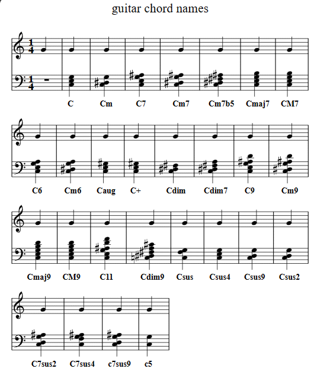
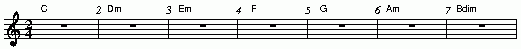
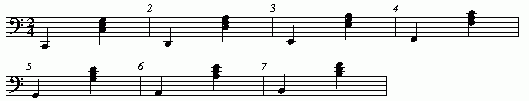
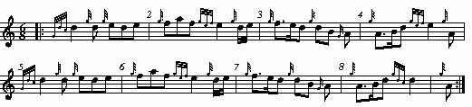
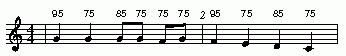
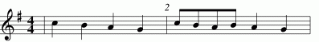
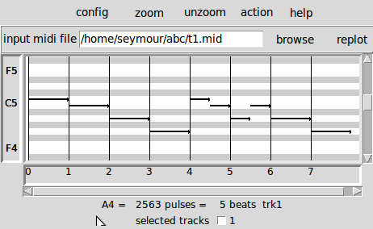
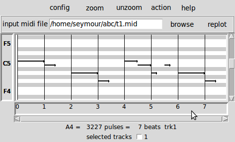
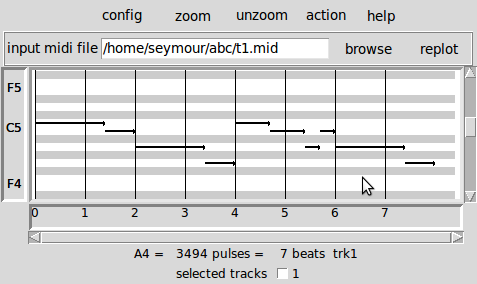
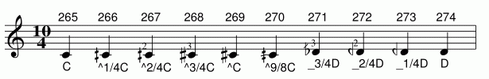

2025/01/26 More details on abcm2ps format files and abc2svg.
2024/12/30
James Allwright has resumed support of the abcmidi package. He has created abc2midiu https://sourceforge.net/projects/abc2midiu/ which should be perfectly compatible with abc2midi and has a few extras. The code is much cleaner and I recommend using abc2midiu.
I added more details on how to deal with microtonal accidentals. Accidental Symbols
2024/05/06
In order to be compliant with the abc standards 2.1 and 2.2 there have been changes to the way the inline I: command treats MIDI instructions. You should no longer include the = sign in the MIDI command. Thus [I:MIDI= program 10] will no longer be processed. Instead you should put [I:MIDI program 10]. In addition, you can no longer string a bunch of %%MIDI directives inside a single inline I: command. It is necessary to put each %%MIDI directive inside a separate inline command. If you do not use inline I: commands, then you do not have any problem. If you have many music files, following the older convention, you may wish to stay with an older version of abc2midi.
2024/03/03 Added a new section clef= which explains some of the impacts of the 2.20 standard on the V: field.
Abc2midi is a program that converts an abc music notation file to a MIDI file. The program was developed by James Allwright in the early 1990s and has been supported by Seymour Shlien since 2003. The program contains many features, such as expansion of guitar chords, drum accompaniment, and support for microtones, that do not exist in other packages. This guide focuses on those features that are particular to abc2midi. It assumes a general understanding of the abc notation syntax. Some knowledge of the MIDI standard is also an asset.
First, abc2midi has some serious limitations and perhaps a few known bugs. Abc2midi ignores all D.C. (Da Capo), D.S. (Da Segno), al Fine symbols. You will either need to explicitly repeat sections or use the P: command to control these repeats. There are many limitations in the handling of lyrics and the creation of Karaoke MIDI files. If the lyrics, are embedded in repeats (eg. |: and :|) they will not be repeated in the MIDI file. To create a proper MIDI file you will have to expand the repeats explicitly in the abc file (eliminating the repeat symbols). This is particularly important, if there are different lyrics in the repeats. In general the repeat symbols cause a minor annoyance since it is common to leave out the opening repeat (|:) in common music notation. Abc2midi needs to know where it returns during a repeat; it silently inserts the opening repeat when it is missing but it may put it in the wrong place if there is an anacrusis. When a music line contains overlays using (sometimes called splits), they are not handled correctly when they occur in a part (eg. P:A). I have not figured out how to do it properly. (The software to handle splits is very complicated since they are put into a separate tracks. The handling of repeats and splits is hard enough.)
Abc2midi is coded in C language; the latest version of the source code is found in the abcMIDI-20*.zip package which can be downloaded from http://ifdo.ca/~seymour/runabc/top.html or http://sourceforge.net/projects/abc/. Executables for some systems can be found in The ABC Plus project.
The source code was designed to compile on many different platforms and operating systems. As a result, there is no graphical user interface built in; however, other programs such as runabc provide the graphical user interface to abcMIDI and other packages.
It is necessary to run abc2midi from a command window in order to supply run time parameters. (This applies to all programs in the abcMIDI package.) If you double click on one of the executables, the screen might blink but nothing else will happen.
Abc2midi creates either a type 0 or type 1 MIDI file. If the abc tune is simple (no voices or accompaniment), abc2midi creates a type 0 file consisting of only one track. For other tunes, abc2midi creates a type 1 file or a multitrack MIDI file. The first track conventionally contains ancillary information such as the name of the tune and other comments. The other tracks contain the different voices and accompaniment.
The MIDI standard provides 16 channels, each of which
can be controlled independently. Commonly, the channels
are mapped into separate musical instruments, allowing
16 instruments to be played at the same time. The different
instruments are referred to as programs
and there
is a special MIDI command which maps a channel to a specific
program. There are 128 possible programs available and they
are referred to by a number from 0 to 127.
Abc2midi automatically assigns a new track and channel to each
voice in the abc tune. (You can change the channel assignment,
with the %%MIDI channel
command.) If the voice contains
splits, i.e. distinct music lines in a measure, the voice will
be mapped into multiple tracks. The bass/chord accompaniment is
put into one track but the bass and chordal accompaniment
have different MIDI channels. The drum and drone accompaniments
are also put into separate tracks and channels.
Since abc2midi creates an audio representation of the abc file, there are a number of commands that are particular to this program that may be embedded in the abc file. These commands are all prefixed with %%MIDI starting from the first column of the line. There are about 40 such commands. For example,
%%MIDI program 64assigns the soprano saxophone to the melody line or the particular voice it is attached to.
To avoid the problem of breaking up a music line in order to place a %%MIDI command, for example,
A2 B2|\ %%MIDI drumon C2 D2|you can place the MIDI instruction inside an info field using the following syntax.
A2 B2|[I:MIDI drumon] C2 D2|The '=' following the MIDI is no longer allowed. If you need more than one MIDI commands, they must be placed in separate [I: ...] directives. For example:
[I: MIDI program 73] [I: MIDI chordprog 29](Spaces are optional.) Besides MIDI, abc2midi also handles octave, vol, and volinc code words in the info command which are discussed later.
Some other commands embedded in the abc body are enclosed by exclamation marks. For example the dynamics are controlled by !pp!, !mf!, !fff! and affect the loudness of all following notes. The decorations !shape! and !bend! apply to only the one note that follows.
%%MIDIdef and %%MIDIx were introduced recently. Some of the %%MIDI commands have a long string of parameters in particular %%MIDI drum and %MIDI bendstring (which are described later). It is convenient to be able to use a more compact notation when these commands are entered repeatedly in the same tune. The %%MIDIdef command allows you define a compact notation which is illustrated in the following example.
X: 1 %%MIDIdef d1 drum dd3d2d2d2d2d2d2 77 76 76 77 76 77 76 77 %%MIDIdef d2 drum d4d2d2d2d2d2d2 76 77 76 77 76 77 76 77 %%MIDIdef d3 drum ddddd2d2dd3 76 76 76 76 77 76 77 77 %%MIDIdef d4 drum d2d2d2d2 77 76 77 76 %%MIDIdef v1 bendstring 1000 -2000 2000 -2000 %%MIDIdef v2 bendstring -2000 1000 1000 1000 T:Tam Lin T:Howling Wind R:reel H:Often first played in Dm a few times round, H:then in Am (#782) a few times round Z:id:hn-reel-234 M:C| K:Dm |:\ %%MIDIx d1 %%MIDIx v1 %%MIDI drumon !bend! A,2DA, FA,DA, | [I: MIDIx d2] !bend! B,2DB, FB,DB,|\ !bend! C2EC GCEC | [I: MIDIx d3] FEDC A,DDC| %%MIDIx d1 !bend! A,2DA, FA,DA, | [I: MIDIx d2]!bend! B,2DB, FB,DB,|\ !bend! C2EC GCEC | [I: MIDIx d3] [I: MIDIx v2] FEDC A,D !bend! D2:: [I: MIDIx d4] dA~A2 FADA | dA~A2 FADA|\ cG~G2 EG~G2 | cG~G2 cdec| dA~A2 FADA |dA~A2 FADA,|\ ~B,3A, B,CDE |[I: MIDIx d3] FDEC A,D!bend!D2:|
The command
%%MIDIdef d1 drum dd3d2d2d2d2d2d2 77 76 76 77 76 77 76 77assigns the code d1 to
%%MIDI drum dd3d2d2d2d2d2d2 77 76 76 77 76 77 76 77where code is an alphanumeric string not exceeding 6 characters. If you insert the command,
%%MIDIx d1abc2midi will replace this command with the correponding %%MIDI command, here
%%MIDI drum dd3d2d2d2d2d2d2 77 76 76 77 76 77 76 77
In the above example, we define 4 drum strings which are called up in different places in the tune. Furthermore, we introduce some vibrato in a few of the notes using %%MIDIx v1. Here is how it sounds like.
In certain circumstances you can combine up to three %%MIDI controlstrings using the %%MIDIx command. The following example shows how it is done.
X:1 T: control string combo M: 4/4 L: 1/4 K: F Q: 1/4 = 60 %%MIDI program 123 # bird tweets %%MIDIdef expr controlstring 11 110 90 60 40 60 60 90 110 %%MIDIdef pan controlstring 10 0 0 20 40 60 80 100 120 127 127 %%MIDIx expr pan !shape! c4 |C4|
The %%MIDI commands referenced by expr and pan behave exactly the same way as they would if the the commands were expressed explicitly; however, as a convenience, the %%MIDIx inserts a %%MIDI controlcombo before the controlstring referenced by pan.
A part label must be a single character in the range A - Z. e.g.
P:A
A part specifier in the header can be used to define the MIDI output as some combination of the specified parts e.g.
P:ABACABA
You can use ( )
If there is no part specifier, the output is simply the parts (or just the unlabelled music) in the order in which it appears in the tune body.
Each voice maps into a new MIDI track. Currently abc2midi has the capacity to create up to 24 tracks. If you do not specify a channel number with a voice, then abc2midi will automatically assign a distinct channel with every voice until it uses up all the 16 channels available in a standard MIDI file. Once all the channels have been used, all new tracks will be assigned channel 1.
If a voice includes voice overlays (formerly called split voices), then each overlay will be assigned an additional track and channel. Since each overlay is given a separate channel, you can assign a separate instrument to each overlay. If you do not specify an instrument, then the overlay would be played on the Acoustic Piano correponding to MIDI program 0. You can specify a MIDI program number to a voice overlay as illustrated below.
X:1 T: Program assignment M: 4/4 L: 1/8 K: C A4 B4 & [I:MIDI program 56 ] DEFG DEFG|
In many instances, in may be preferable for the voice
overlay to inherit the channel (and instrument) from the parent
voice. This is now an option provided you follow the voice declaration
with a %%MIDI channel n
command where n is a number
between 1 and 16 inclusive. For example:
X:1 T: Voice overlay with no inheritance L: 1/4 M: 4/4 K: E V:1 %%MIDI program 40 # violin E4 & GABc|In this example voice 1 is split into two tracks and each track gets a separate channel. Program 40 is assigned to channel 1, but no program was assigned to channel 2 so channel 2 is played on the acoustic piano.
X:2 T:Voice overlay With inheritance L: 1/2 M: 4/4 K: E V:1 %%MIDI channel 2 %%MIDI program 40 # violin E4 & GABc|In this example, the user assigns channel 2 to the voice. The voice is again split into two tracks; however, both tracks are assigned to the same channel 2. Therefore the program assignment applies to the two tracks.
Jef Moine has extended the voice overlay syntax in abcm2ps to apply to a group of bars. The syntax looks something similar to below
|(& ... |... & ...| ... &)|and is described in abcm2ps_doc/features. Abc2midi now recognizes this convention but is probably not as robust as abcm2ps. It is up to the user to ensure that bars in all overlays match in duration.
If all the MIDI channels has been used, then you will need to reuse one the MIDI channels. You can find out how the channels have been assigned by running abc2midi in verbose mode. For example
abc2midi myfile.abc -v 1
K:Eb K:EDor K:EbDorThe following table relates the number of sharps or flats you see on the stave to what is in the K: field :
4 sharps EMaj F#Dor G#Phr A#Lyd B#Mix C#Min 3 sharps AMaj BDor CPhr DLyd EMix F#Min 2 sharps DMaj EDor FPhr GLyd AMix BMin 1 sharp GMaj ADor BPhr CLyd DMix EMin 0 sharp CMaj DDor EPhr FLyd GMix AMin 1 flat FMaj GDor APhr BLyd CMix DMin 2 flats BbMaj CDor DPhr ELyd FMix GMin 3 flats EbMaj FDor GPhr ALyd BbMix CMin 4 flats AbMaj Bbdor CPhr DLyd EMix FMin 5 flat DbMaj Ebdor FPhr GLyd AbMix BbMin
As an extension, abc2midi also recognizes "Maj" for Major "Min" for Minor, "Phr" for Phrygian, "Lyd" for Lydian, "Aeo" for Aeolian and "Loc" for Locrian. Thus CMaj, EPhr, FLyd, AAeo and BLoc will all generate a stave with no sharps or flats. If you use one of these modes in the key signature, it is recommended that you add a comment giving the number of sharps or flats for the benefit of other people who may not be familiar with modes. e.g.
K: DLoc % 3 flatsThe key signature may be followed by modifiers. A modifier consists of ^^, ^ =, _ or __ followed by a-g or A-G. As an example, ^g means every a should be played sharp unless otherwise marked in the music. This adds ^g to the existing key signature. For example
K: G ^c^gwill produce a key signature similar to A major. Following the abc draft 2.0 standard, inserting the string exp in the key signature will cause abc2midi to override the existing key signature. Thus
K: A exp _bwill remove the f,c and g sharps and put a b-flat instead. You may use both upper and lower case letters as key modifiers since they are distinguished by abcm2ps.
The modifiers in the key signature now allow you to put microtones. For example: K:C _1/2B will flatten the key of B by half of a semitone. Note that in the current implementation, microtones do not propagate and accidentals will not affect following B notes in the measure. Certain combinations may not work as expected. For example K:F _1/2B may be treated the same way as K: C _1/2B. See the microtone section for more details.
Another extension of the K: field is that it can include a clef specifier an octave specifier and a transpose specifier e.g.
K:G clef=soprano octave=-1 transpose=-1The clef is recognized by typesetting programs such as yaps and abc2mps and in some situations it will cause abc2midi to transpose the notes up or down by an octave. Recognized clefs are treble, bass, baritone, tenor, alto, mezzo and soprano. There are also variants of these clefs; treble-8, tenor-8, treble+8 covering ranges which are an octave below and an octave above the normal treble clef. Other variants are not recognized at this time. No transposition is assumed for the bass clef since many abc files enter the notes with all the commas.
The octave specifier is a convenience to make entering music easier. It allows the user to avoid repeatedly entering commas or apostrophes when entering a sequence of low or high notes. Both yaps and abc2midi will transpose the notes by the specified number of octaves during the parsing stage.
e.g. the passage B,,, C,, D,, E,, F,, could be written more compactly as
I:octave=-2 B, C D E F I:octave=0
Some instruments such as the Bb clarinet automatically transpose the written music. For example in the case of the clarinet, the music is written in the key of C but the instrument plays it in the key of Bb. For multivoiced tunes, the %%MIDI transpose indication is not that useful since it transposes all the voices by the specified amount. The transpose=n subcommand in the K: field tells abc2midi to transpose a particular voice by n semitones without affecting how it appears in the printed score. For example for the tune,
X:1 T:tranposing M:1/8 L:2/4 K:C V:1 K:C transpose=-1 CDEF|GABc| V:2 K:C CDEF|GABc V:1 CDEF|GABc| V:2 CDEF|GABcVoice 1 will be played one semitone lower than indicated. These transposition features are disabled for channel 10 which is reserved for percussion instruments.
%%MIDI channel nassigns MIDI channel n (in the range 1-16) to the current voice or melody.
%%MIDI program [c] nselects program n (in the range 0-127) to channel c. If c is not given, the program is assigned to the current channel being used. Most modern tone generators follow the General MIDI standard, which defines the instrument type for each program number. These instruments are listed at the end of this section. Note that for multivoiced files, the program command is placed in the track associated with the voice previously declared. If the %%MIDI indications affect channels in other tracks, it is recommended that they be placed before the first track or first declared voice. The following example is used to illustrate the use of the
%%MIDI channelcommand. This is not the recommended practice for changing programs since it ties up 4 channels unnecessarily.
X: 10
T:Avon Jig
% Nottingham Music Database
S:Pauline Wilson, via Phil Rowe
M:6/8
Q:1/4=180
K:Em
%%MIDI program 5 10
%%MIDI program 6 20
%%MIDI program 7 30
%%MIDI program 8 40
%%MIDI channel 5
B|"Em"e2e B2B|GAB E3|"D7"FED AGF|FED AGF|
%%MIDI channel 6
"Em"e2e B2B|"Em"GAB E3|"D7"FED A2A|"Em"GEE E2::
%%MIDI channel 7
D|"G"G2G B2B|"D7"ABA D3|"G"G2G B2B|"Am"d2d "D7"cBA|"G"G2G B2B|"D7"ABA D3|\
%%MIDI channel 8
"Em"EFG "A7"FED|"Em"E3 -E2:|
X: 10
T:Avon Jig
% Nottingham Music Database
S:Pauline Wilson, via Phil Rowe
M:6/8
Q:1/4=180
K:Em
%%MIDI program 10
B|"Em"e2e B2B|GAB E3|"D7"FED AGF|FED AGF|
%%MIDI program 20
"Em"e2e B2B|"Em"GAB E3|"D7"FED A2A|"Em"GEE E2::
%%MIDI program 30
D|"G"G2G B2B|"D7"ABA D3|"G"G2G B2B|"Am"d2d "D7"cBA|"G"G2G B2B|"D7"ABA D3|\
%%MIDI program 40
"Em"EFG "A7"FED|"Em"E3 -E2:|
| 0. Acoustic Grand Piano | 1. Bright Acoustic Piano | 2. Electric Grand Piano |
| 3. Honky-tonk Piano | 4. Electric Piano 1 | 5. Electric Piano 2 |
| 6. Harpsichord | 7. Clavi | 8. Celesta |
| 9. Glockenspiel | 10. Music Box | 11. Vibraphone |
| 12. Marimba | 13. Xylophone | 14. Tubular Bells |
| 15. Dulcimer | 16. Drawbar Organ | 17. Percussive Organ |
| 18. Rock Organ | 19. Church Organ | 20. Reed Organ |
| 21. Accordion | 22. Harmonica | 23. Tango Accordion |
| 24. Acoustic Guitar (nylon) | 25. Acoustic Guitar (steel) | 26. Electric Guitar (jazz) |
| 27. Electric Guitar (clean) | 28. Electric Guitar (muted) | 29. Overdriven Guitar |
| 30. Distortion Guitar | 31. Guitar harmonics | 32. Acoustic Bass |
| 33. Electric Bass (finger) | 34. Electric Bass (pick) | 35. Fretless Bass |
| 36. Slap Bass 1 | 37. Slap Bass 2 | 38. Synth Bass 1 |
| 39. Synth Bass 2 | 40. Violin | 41. Viola |
| 42. Cello | 43. Contrabass | 44. Tremolo Strings |
| 45. Pizzicato Strings | 46. Orchestral Harp | 47. Timpani |
| 48. String Ensemble 1 | 49. String Ensemble 2 | 50. SynthStrings 1 |
| 51. SynthStrings 2 | 52. Choir Aahs | 53. Voice Oohs |
| 54. Synth Voice | 55. Orchestra Hit | 56. Trumpet |
| 57. Trombone | 58. Tuba | 59. Muted Trumpet |
| 60. French Horn | 61. Brass Section | 62. SynthBrass 1 |
| 63. SynthBrass 2 | 64. Soprano Sax | 65. Alto Sax |
| 66. Tenor Sax | 67. Baritone Sax | 68. Oboe |
| 69. English Horn | 70. Bassoon | 71. Clarinet |
| 72. Piccolo | 73. Flute | 74. Recorder |
| 75. Pan Flute | 76. Blown Bottle | 77. Shakuhachi |
| 78. Whistle | 79. Ocarina | 80. Lead 1 (square) |
| 81. Lead 2 (sawtooth) | 82. Lead 3 (calliope) | 83. Lead 4 (chiff) |
| 84. Lead 5 (charang) | 85. Lead 6 (voice) | 86. Lead 7 (fifths) |
| 87. Lead 8 (bass + lead) | 88. Pad 1 (new age) | 89. Pad 2 (warm) |
| 90. Pad 3 (polysynth) | 91. Pad 4 (choir) | 92. Pad 5 (bowed) |
| 93. Pad 6 (metallic) | 94. Pad 7 (halo) | 95. Pad 8 (sweep) |
| 96. FX 1 (rain) | 97. FX 2 (soundtrack) | 98. FX 3 (crystal) |
| 99. FX 4 (atmosphere) | 100. FX 5 (brightness) | 101. FX 6 (goblins) |
| 102. FX 7 (echoes) | 103. FX 8 (sci-fi) | 104. Sitar |
| 105. Banjo | 106. Shamisen | 107. Koto |
| 108. Kalimba | 109. Bag pipe | 110. Fiddle |
| 111. Shanai | 112. Tinkle Bell | 113. Agogo |
| 114. Steel Drums | 115. Woodblock | 116. Taiko Drum |
| 117. Melodic Tom | 118. Synth Drum | 119. Reverse Cymbal |
| 120. Guitar Fret Noise | 121. Breath Noise | 122. Seashore |
| 123. Bird Tweet | 124. Telephone Ring | 125. Helicopter |
| 126. Applause | 127. Gunshot |
X: 3
T:Dennis Murphy's
% Nottingham Music Database
S:via PR
M:4/4
L:1/4
K:D
d/2e/2|:"D"f/2g/2f/2e/2 d3/2B/2|AD FA|"Em"GE e3/2d/2|"A7"cB c/2B/2A|
"D"f/2g/2f/2e/2 d3/2B/2|"D"AD FA|"Em"GE "A7"e3/2f/2|"D"ed d2::
"D"Af f/2e/2f|"G"Bg g/2f/2g|"D"Af f/2e/2d|"A7"e/2f/2e/2d/2 BA|
"D"Af f/2e/2f|"G"Bg g3/2a/2|"A7"ba gc|"D"ed d2:|

Lower case a-g followed by optional # or b will generate a single note (the fundamental) only.
The chord notation also allows chords such as "G/B" or "G/b". The note following the / is interpreted in one of two ways:
If the note following / does not exist as part of the given chord, it is added to the chord below the root note of the chord (G in the above example).
If the note following / does exist in the chord, then the notes of the chord are rearranged so that it becomes the lowest pitch note of the chord. This is known as an inversion of the chord. It does not matter whether the note following the / is upper or lower case. They are both treated the same. The following examples are equivalent.
X:1
T: chord types
M: 2/4
L: 1/4
K: C
%%MIDI gchord fc
"C/E" z2| "CM7/G" z2| "C/F" z2|"C/f" z2|
X: 2
T: chords expanded
M: 2/4
L: 1/4
K:C
"^C/E"E,, [CG,E,]| \
"^CM7/G"G,, [ECB,G,]| \
"^C/F"F,,, [G,E,C,]| \
"^C/f"F,,, [G,E,C,]|
You may find some abc tunes that abuse this notation and use quotes for things that are not guitar chords. Usually these are tunes that have been typeset but never played by a computer. If you do not want to just delete things in quotes, you can insert one of the characters _, ^, @, < or > after the first quote e.g. "_Chorus" "_Very Loud". This causes abc2midi to ignore the following text. However, typesetting programs should recognize the first character as telling them where to print the following text.
Abc2midi expands the guitar chords into a specific pattern of notes
and places them into a separate track in the midi file. For common
time signatures such as 2/4,3/4 and 4/4, there are specific patterns
already defined; for unusual time signatures, the user must define
the patterns. For example:

expands to

The guitar chord consists of two components, the bass note and the
chord. Each component is assigned a separate MIDI channel, so that
the user is able to play them on separate instruments. For example,
listen to the following arrangement of
Dennis Murphy's Reel
The abc file containing these special instructions abc2midi is
shown here.
X: 3 T:Dennis Murphy's % Nottingham Music Database S:via PR M:4/4 L:1/4 K:D %%MIDI program 64 %%MIDI chordprog 24 %%MIDI bassprog 45 %%MIDI beat 87 77 67 4 %%MIDI chordvol 88 %%MIDI bassvol 82 d/2e/2|:"D"f/2g/2f/2e/2 d3/2B/2|AD FA|"Em"GE e3/2d/2|"A7"cB c/2B/2A| "D"f/2g/2f/2e/2 d3/2B/2|"D"AD FA|"Em"GE "A7"e3/2f/2|"D"ed d2:: "D"Af f/2e/2f|"G"Bg g/2f/2g|"D"Af f/2e/2d|"A7"e/2f/2e/2d/2 BA| "D"Af f/2e/2f|"G"Bg g3/2a/2|"A7"ba gc|"D"ed d2:|
Here is an explanation of all the %%MIDI instructions.
%%MIDI program 64tells abc2midi to assign the soprano saxophone to the melody line (or the current voice). The General Midi Standard assigns 128 instrument sounds to the program numbers. Assuming that the program numbers start from zero, the soprano saxophone has the number 64.
%%MIDI chordprog 24likewise assigns the acoustic guitar (nylon), to the chords and
%%MIDI bassprog 45assigns the pizzicato strings to the bass. The loudness (called velocities in MIDI nomenclature) of the bass and chord accompaniment are specified separately using the bassvol and chordvol parameters. For example,
%%MIDI chordvol 64 %%MIDI bassvol 72The values range from 0 to 127, where 127 is the loudest. If you do not specify these levels, they are set to chordvol = 75 and bassvol = 80.
The beat command is used to control the loudness of the melody or other voices. This is described in a separate section.
Abc2midi now accepts octave=n where n is between -2 and 2 inclusive in the chordprog and bassprog MIDI command. This shifts the pitch of the bass and chordal accompaniment by the specified number of octaves from their usual positions. For example,
%%MIDI bassprog 45 octave=1will shift the acoustic guitar up one octave.
The manner in which the guitar chords are translated into bass and chords is controlled by the %%MIDI gchord string.
%%MIDI gchord [string]
Sets up how guitar chords are generated. The string is a sequence of letters, each followed by an optional length:
| z | rest |
| c | chord |
| f | fundamental (root note of chord) |
| b | fundamental plus chord |
| G/H/I/J/K | individual notes starting from the lowest note of the chord |
| g/h/i/j/k | an octave above these |
For example for the C major chord "C", g refers to C, h refers to E and i refers to G. But for "C/E" (the first inversion of the C major chord), g refers to E, h refers to G and i refers to C. Note that for chords containing 3 notes, j,k,J,or K will be treated as rests.
The gchord strings have been set for common time signatures such as 2/4, 4/4, 3/4/, 6/8 and 9/8. For example, in the above example the gchord string was assumed to be fzczfzcz where f designates fundamental, c designates chord and z designates a rest. These letters may be followed by numbers which multiply the length of these entities by the factor. For example, an alternative gchord string could be f2cf2c. For other time signatures such as 7/8, it is necessary to indicate the gchord string for example,
%%MIDI gchord f2f2cz2
Please note that the default gchord string is issued any time a time signature change is specified in the body of the music. This means that if one of the bars has an extra beat and you encircled the bar with M: declarations, then the gchord string would be reset to the default string associated with that time signature. It is necessary to send another %%MIDI gchord declaration after the the time signature in order to set this back to the desired gchord string.
Also note that the standard note length of a single note f,c,z or d is not determined by the L: command. Instead it is adjusted so that the entire gchord string fits in a bar. (The same will apply to the drum string described later.) For example, if you have
%%MIDI gchord fffffthe bar will be divided evenly into five fundamental notes irrespective of the time signature (T:) and unit length indication. ( L:).
The gchord command has been extended to allow you to play the individual notes comprising the guitar chord. This allows you to play broken chords or arpeggios. The new codes g,h,i,j, G,H,I,J reference the individual notes starting from the lowest note of the chord (not necessarily the root in the case of inverses). For example, for the C major chord, g refers to C, h refers to E and i refers to G. For a gchord command such as
%%MIDI gchord ghihAbc2midi will arpeggiate the C major guitar chord to CEGE. The upper case letters G,H,I, and J refer to the same notes, except they are transposed down one octave. Note that for the first inversion of the C major chord (indicated by "C/E"), E would be the lowest note, so g would reference the note E. To hear an example using the command
%%MIDI gchord ghigclick on Dennis Murphy's Reel arpeggiatted. The first few bars of the arpeggiated tune look like this.
If the guitar chord does not change in consecutive bars, it is not necessary to repeat the guitar chord in each bar. Once the guitar chord accompaniment has been started with the first guitar chord indication, there is only one way to turn it off.
%%MIDI gchordoffTurns off guitar chords.
%%MIDI gchordonTurns on guitar chords (they are turned on by default at the start of a tune after the first guitar chord). If you do not hear the guitar chord accompaniment after the first guitar chord indication, it is probably because there is no default gchord string for the particular time signature. You will need to include a gchord string.
You can now have more than one gchord accompaniment track. Here is an example:
X:1
T: gchord multivoice extension
M: 4/4
L: 1/4
K: G
V: 1
%%MIDI gchord ghih
"G" z4| z4|\
%%MIDI gchordoff
z4|
V:2
%%MIDI chordprog 12
%%MIDI gchord GHIHG
z4|"D" z4|z4|
X: 1
T: gchordbars
M: 6/8
L: 1/8
K: G
%%MIDI gchordbars 2
%%MIDI gchord z2cz2cz2cc2z
"G" z3 "D" z3|"G" z3 "D" z3|
"C" z3 "D" z3|"D" z3 "G" z3|
"G" z3 "D" z3|"G" z3 "D" z3|
"C" z3 "D" z3|"G" z3 "G" z3|
%%MIDI chordname name n1 n2 n3 n4 n5 n6Defines how to play a guitar chord called "name". n1 is usually 0 and n2, n3 to n6 give the pitches of the other notes in semitones relative to the root note. There may be fewer than 6 notes in the chord, but not more. If "name" is already defined, this command redefines it. Unlike most other commands, chordname definitions stay in effect from where they are defined to the end of the abc file. The following illustrates how m, 7, m7 and maj7 could be set up if they were not already defined.
%%MIDI chordname m 0 3 7 %%MIDI chordname 7 0 4 7 10 %%MIDI chordname m7 0 3 7 10 %%MIDI chordname maj7 0 4 7 11
%%MIDI droneonThis starts a continuous drone used in bagpipe music. The drone consists of two notes (by default A, and A,,) played on a bassoon at a MIDI loudness (velocity) 80. You can configure the drone sound using the %%MIDI drone command described below.
%%MIDI droneoffThis turns off the drone.
%%MIDI drone n1 n2 n3 n4 n5Configures the drone chord. n1 = MIDI program, n2 = MIDI pitch 1, n2 = MIDI pitch 2, n4 = MIDI velocity 1, and n5 = MIDI velocity 2. By default they have already been set to 70 45 33 80 80.
For example:
click on Banks and Braes.

X: 1
T:Banks and Braes
M:6/8
L:1/8
S:Slow March
K:HP
%%MIDI program 109
%%MIDI gracedivider 4
%%MIDI drone 70 45 33 61 54
%%MIDI droneon
|: {Gdc}d2{g}d{g}ede|\
{g}faf{gef}e2{g}d/2e/2|\
{g}f3/2e/2d{g}dB{G}A|\
{g}A3/2B/2d{gef}e2{g}A|
{Gdc}d2{g}d{g}ede|\
{g}faf{gef}e2{g}d/2e/2|\
{g}f3/2e/2d{g}dB{G}A|\
{g}A3/2B/2d{gdc}d2| {g}A:|
%%MIDI drum string [drum pitch numbers] [drum velocities]This sets up a drum pattern. The string determines when there is a drum beat and the drum pitch values determine what each drum strike sounds like. Drum velocities indicate which range from 0 to 127 indicate the loudness of each drum hit. e.g. %%MIDI drum d2zdd 35 38 38 100 50 50 The string may contain 'd' for a drum strike or 'z' for a rest. By default a voice starts with no drum pattern. The drum string is treated in a similar manner as the gchord string and is expanded to fill the whole bar (with one exception to be discussed later).
%%MIDI drumonis needed to enable the drumming. The drum pattern is repeated during each bar until a
%%MIDI drumoffis encountered. The %%MIDI drum command may be used within a tune to change the drum pattern. This command places the drum sounds on channel 10 and assumes that your tone generator complies with the General Midi standard - if it does not, then you may hear tones instead of drum sounds. (Note the old method of using the instruction !drum! and !nodrum! is being deprecated.) For example: click on Macedonska Sedenka sample.
X:1
T:Macedonska Sedenka abridged sample
O:Macedonia
C:Trad.
R:kopanica
Z:http://swiss.csail.mit.edu/~jaffer/Music
Q:1/4=220
M:11/8
L:1/8
K:C
%%MIDI gracedivider 2
%%MIDI channel 1
%%MIDI program 1 71
%%MIDI chordprog 71
%%MIDI chordvol 40
%%MIDI bassprog 58
%%MIDI gchord f2c2c3f2c2
%%MIDI drumon
%%MIDI drum d2d2d2dd2d2 43 43 41 37 43 43
|:"G"dz ^fg gfa ~g2 =fe | ef df ~e2 d ^cd dG |
^cd ef dfd ~e2 ed |1 "D"^cd Bd ~=c2 B "G"BG dG :|2 "D"^cd Bd ~=c2 B "G"B2 z2 ||
%%MIDI drumbars nwhere n is a small number will spread out the drum string over n consecutive bars. By default drumbars is set to 1 maintaining compatibility with existing abc files. Ensure that the drumstring is evenly divisible between the drumbar bars. The drumbars command must precede the drum command. Also the time signature should not change between bars in a drumbar unit. The following example illustrates the use of drumbar command.
X:1
T: splitting a drum string into two bars
M: 2/4
L: 1/8
K: G
%%MIDI drum zdzdzdzd 39 59 50 60
%%MIDI drumon
z4| z4| z4| z4|
%%MIDI drumbars 2
%%MIDI drum zdzdzdzd 39 59 50 60
z4| z4| z4| z4|
You can also have separate drum accompaniment for separate voices. Here is an example:
X:1
T: drum multivoice extension
M: 4/4
L: 1/4
K: G
V:1
%%MIDI drum dddd 45 45 45 45 70 50 60 50
%%MIDI drumon
z4|z4|\
%%MIDI drumoff
z4|
V:2
%%MIDI drum ddddd 54 54 54 54 54 70 50 50 60 50
z4|\
%%MIDI drumon
z4|z4|
The following table shows the MIDI pitch to percussion assignment.
| 35. Acoustic Bass Drum | 36. Bass Drum 1 | 37. Side Stick |
| 38. Acoustic Snare | 39. Hand Clap | 40. Electric Snare |
| 41. Low Floor Tom | 42. Closed Hi Hat | 43. High Floor Tom |
| 44. Pedal Hi-Hat | 45. Low Tom | 46. Open Hi-Hat |
| 47. Low-Mid Tom | 48. Hi Mid Tom | 49. Crash Cymbal 1 |
| 50. High Tom | 51. Ride Cymbal 1 | 52. Chinese Cymbal |
| 53. Ride Bell | 54. Tambourine | 55. Splash Cymbal |
| 56. Cowbell | 57. Crash Cymbal 2 | 58. Vibraslap |
| 59. Ride Cymbal 2 | 60. Hi Bongo | 61. Low Bongo |
| 62. Mute Hi Conga | 63. Open Hi Conga | 64. Low Conga |
| 65. High Timbale | 66. Low Timbale | 67. High Agogo |
| 68. Low Agogo | 69. Cabasa | 70. Maracas |
| 71. Short Whistle | 72. Long Whistle | 73. Short Guiro |
| 74. Long Guiro | 75. Claves | 76. Hi Wood Block |
| 77. Low Wood Block | 78. Mute Cuica | 79. Open Cuica |
| 80. Mute Triangle | 81. Open Triangle |
X: 1 T: drum voice M: 4/4 L: 1/8 Q:1/4=120 K:C % 0 sharps V:1 %%MIDI channel 10 %%MIDI program 0 C,,C,, D,,C,,z2 C,,2| \ C,,C,, D,,C,, C,,D,, C,,2| \ C,,C,, D,,C,,z2 C,,2| \ C,,C,, D,,C,, C,,D,, C,,2| \Note C,, maps into MIDI pitch 36 which is interpreted as
Bass Drum 1and note D,, maps into MIDI pitch 38 which is interpreted as
Acoustic Snare. When the notes are displayed using abcm2ps, the following score is seen.
MIDI drummapcommand allows the user to remap the MIDI pitches in the drum voice to more convenient ABC notes. For example:
X: 1 T: drum voice - remapped M: 4/4 L: 1/8 Q:1/4=120 K: C V:1 clef=perc %%MIDI channel 10 %%MIDI program 0 %%MIDI drummap G 36 %%MIDI drummap D 38 GG DGz2 G2| \ GG DG GD G2| \ GG DGz2 G2| \ GG DG GD G2| \
%%MIDI drummap G 36maps MIDI pitch 36 to G instead of C,,. Likewise, D is mapped to MIDI pitch 38. The score can now appear as follows.
The following table indicates the default note to percussion assignment.
| B,,, Acoustic Bass Drum | C,, Bass Drum 1 | ^C,, Side Stick |
| D,, Acoustic Snare | ^D,, Hand Clap | E,, Electric Snare |
| F,, Low Floor Tom | ^F,, Closed Hi Hat | G,, High Floor Tom |
| ^G,, Pedal Hi-Hat | A,, Low Tom | ^A,, Open Hi-Hat |
| B,, Low-Mid Tom | C, Hi Mid Tom | ^C, Crash Cymbal 1 |
| D, High Tom | ^D, Ride Cymbal 1 | E, Chinese Cymbal |
| F, Ride Bell | ^F, Tambourine | G, Splash Cymbal |
| ^G, Cowbell | A, Crash Cymbal 2 | ^A, Vibraslap |
| B, Ride Cymbal 2 | C Hi Bongo | ^C Low Bongo |
| D Mute Hi Conga | ^D Open Hi Conga | E Low Conga |
| F High Timbale | ^F Low Timbale | G High Agogo |
| ^G Low Agogo | A Cabasa | ^A Maracas |
| B Short Whistle | c Long Whistle | ^c Short Guiro |
| d Long Guiro | ^d Claves | e Hi Wood Block |
| f Low Wood Block | ^f Mute Cuica | g Open Cuica |
| ^g Mute Triangle | a Open Triangle |
Abc2midi automatically applies accents to the beats based on the time signature. The MIDI beat command indicates the amount of accent as well as the general loudness of the voice.
%%MIDI beat a b c nFour parameters are needed to specify the loudness level of the notes in the melody line. The first note in a bar has velocity a . Other "strong" notes have velocity b and all the rest have velocity c. a, b and c must be in the rang 0-127. The parameter n determines which notes are "strong". The beat number of each note is determined on the basis of the time signature and the accumulated note length. If the beat number is a multiple of n, then the note is "strong".
The loudness of the notes indicated above the following notes would
be appropriate for a, b, c and n set to 95, 85, 75 and 2 respectively.

This would sound like this.
Without the accents it would sound like
this.
Some instruments such as the church
organ have no emphasized notes. It may be appropriate to have
all notes played at an even level by including the following
command.
%%MIDI nobeataccentsTo revert to emphasizing notes in the usual way (default), add
%%MIDI beataccents
The volume specifiers !ppp! to !fff! are equivalent to the following :
!ppp! = %%MIDI beat 30 20 10 1 !pp! = %%MIDI beat 45 35 20 1 !p! = %%MIDI beat 60 50 35 1 !mp! = %%MIDI beat 75 65 50 1 !mf! = %%MIDI beat 90 80 65 1 !f! = %%MIDI beat 105 95 80 1 !ff! = %%MIDI beat 120 110 95 1 !fff! = %%MIDI beat 127 125 110 1An alternative way of specifying where the strong and weak stresses fall within a bar uses a beatstring.
%%MIDI beatstring <string of f, m and p>'f' means velocity a (normally strong), 'm' means velocity b (medium velocity) and 'p' means velocity c (soft velocity). For example, if the time signature is 7/8 with stresses on the first, fourth and sixth notes in the bar, we could use the following:
%%MIDI beatstring fppmpmpwhich would be played as follows:
Phil Taylor has introduced a more sophisticated stress algorithm in his BarFly program for the Mac. This model not only changes the loudness of the notes but also alters the duration of the notes. The bar is split into a number of equal segments where each segment is assigned a note loudness (velocity) and an expansion factor. The partitioning of the bar into segments and the segment coefficients depend upon the rhythm designator (eg. jig) and the time signature. Abc2midi provides two different models that apply this stress program. The first model which modifies the articulation of the notes rather than the duration of the beats and it was easiest to implement. The second model, which closely resembles BarFly, actually distorts the time scale in the bar or beat by expanding or contracting the segments. Abc2midi uses built in tables (based on Phil Taylor's models) which store the various configurations. All the configurations preserve the duration of the musical bar.
To hear the affect of the different models, listen to the following MIDI files produced from the double jig, 'Sailor's Wife' .
Abc2midi by default uses the Beat model which also provides some support to the dynamic designators such as +mf+ (for mezzoforte), +ppp+ (for pianissimo) etc. To load the BarFly stress model instead, it is necessary to include the runtime parameter -BF in the execution string. For example,
abc2midi myfile.abc -BFYou may follow -BF by either the numeral 1 or 2 to select the desired stress model. If -BF is not followed by 1 or 2, the stress model defaults to 2 (the Barfly model). In order, for the BarFly stress model to work, the file must contain a rhythm designator, for example,
R: hornpipeand an a appropriate time signature matching one of the built in configurations. It does not matter whether there are upper or lower case letters; however, if the rhythm designator is in two words, eg,
R: Double Hornpipethere should only be one space between the two words. If abc2midi does not recognize the rhythm descriptors, you will get a message similar to this.
**warning** rhythm designator Lesnoto 7/8 is not one of Hornpipe 4/4 Hornpipe C| Hornpipe 2/4 Hornpipe 9/4 Hornpipe 3/2 Hornpipe 12/8 Double hornpipe 6/2 Reel 4/4 Reel C| Reel 2/4 Slip Jig 9/8 Double Jig 6/8 Single Jig 6/8 Slide 6/8 Jig 6/8 Ragtime 12/8 Strathspey C Fling C Set Dance 4/4 Set Dance C| Waltz 3/4 Slow March C| Slow March C March C| March C March 6/8 March 2/4 Polka k1 3/4 Polka 4/4 saucy 3/4 Slip jig 3/4 Tango 2/4and the usual beat model will be used. Nevertheless, you can still call up your own stress model using a MIDI directive shown below
%%MIDI ptstress myfolder/test.txt
4 120 1.4 60 0.6 120 1.4 60 0.6where the first value is the number of segments and each line specifies the velocity and duration multiplier of the specific segment. The velocity is limited to 127 and the duration is a decimal number. The note durations is modified by varying the gap between notes, so it is not possible to extend a note. This preserves the regular tempo of the music. The program scales, the note duration indications by dividing it by the maximum value which here is 1.4.
Alternatively, the ptstress parameters can be expressed directly like:
%%MIDI ptstress 3 120 1.4 60 0.6 120 1.4 60 0.6The program first tries to parse the directive as numbers; if it is not successful it assumes the string is a file name.
If you are calling up the stress model manually using the %%MIDI ptstress directive, it is unnecessary to include the -BF runtime parameter or the rhythm designator. The %%MIDI ptstress command should occur after the M: time signature designation, since it is needed. The %%MIDI ptstress command applies to the entire abc tune. You cannot change the stress parameters in the middle of the tune. Only one command will apply.
The abcMIDI distribution package comes with several sample stress files in the pt/ folder. By default abc2midi will use stress model 2 but you can select model 1 using the following MIDI directive.
%%MIDI stressmodel 1
In order demonstrate how these stress models affect the note durations, consider the following simple test file.
X: 1 T:test M:4/4 L:1/4 R: myrhythm K:G %%MIDI ptstress abcmidi/pt/test.txt |cBAG|c/B/A/B/AG|In music notation, this file would appear as follows. 
The first line indicates the number of segments in the bar. Each
following line specifies the velocity and the expansion factor.
Velocity is a MIDI term which is related to the loudness of the
note. (The more expensive MIDI keyboards had velocity detectors
below each key that would return how hard the key was hit.)
The expansion factor specifies how much the duration of the
note inside a particular segment is expanded (or contracted).
The total of all the expansion factors (here 4.0) must equal
the number of segments. Otherwise the duration
of the bar will not be preserved. The next illustration, shows
the piano roll representation of the MIDI file before applying
any stress model. The vertical lines separate the music into
quarter note intervals which also correspond to segments in this
case.

Stress model 1 cannot expand any notes, so all the expansion factors
are normalized so that the maximum is 1.0. The notes in a segment
are shortened by increasing the inter-note spacing, essentially
controlling the articulation of the notes. This is illustrated
below. If a note overlaps two segments, the normalized expansion factor
is averaged over the two segments weighted by the portion of
the note in each segment.

Stress model 2, expands or contracts the notes by the specified
expansion coefficients. In effect, this corresponds to expanding
or contracting the segments.

The algorithm maps the start and end time of the notes, into the
distorted space.
There are 32 default stress models built in the code of abc2midi so that it is unnecessary to distribute an external file with the abc2midi executable. You can customize these default models by causing abc2midi to read a specific file using the -CSM <filename.txt> option (see runtime options below). The given file must comply with the following format exactly as illustrated below.
March 6/8 6 3 110 1.2 80 0.9 80 0.9 Lesnoto 7/8 7 7 110 1.3 90 1.0 80 0.7 100 1.2 90 0.8 100 1.2 90 0.8Each model ends with a blank line. The first line is the rhythm designator. This is followed by the time signature in the next line. The two numbers in the third line specify the variables nseg and nval. For example, for the March rhythm designator, nseg is 6 and nval is 3. The BarFly stress model segments a bar into nseg segments. The nval following lines specify the characteristics of each segment. If nval is less than nseg, the values in the nval lines are recycled until all segments are specified. The loudness (MIDI velocity) and duration is specified for each segment.
There are two models in the above example. The first model, March 6/8 already exists in abc2midi. The characteristic of this model is modified with the information in this file. The second model, Lesnoto 7/8 is new. abc2midi appends this model to the given set. Up to 16 new models may be introduced.
Sample files for customizing the stress models are provided with the abcMIDI sources in the pt/ subdirectory. The file customstress.txt is similar to the above. The file default_stress.txt is a copy of the built in models. If you modify this file and load it into abc2midi using the -CSM option, you can adapt the characteristics of the stress models to a particular tempo or instrument.
The tempo is usually indicated with the Q: field command, eg. Q:1/4=180 which is interpreted as 180 quarter beats per minute. In compliance with the abc standard 2.0, you may also indicate the tempo using directives such as "lento", "allegro", "vivace" etc.
The following table based on http://www.music.vt.edu/musicdictionary/appendix/tempo/tempo1.html was used to translate the indications:
Larghissimo 1/4=40 Moderato 1/4=104 Adagissimo 1/4=44 Allegretto 1/4=112 Lentissimo 1/4=48 Allegro 1/4=120 Largo 1/4=56 Vivace 1/4=168 Adagio 1/4=59 Vivo 1/4=180 Lento 1/4=62 Presto 1/4=192 Larghetto 1/4=66 Allegrissimo 1/4=208 Adagietto 1/4=76 Vivacissimo 1/4=220 Andante 1/4=88 Prestissimo 1/4=240 Andantino 1/4=96Note: case is ignored (eg. ALLEGRO Allegro or allegro are treated the same). The directive must be enclosed in double quotes.
Reference: http://abc.sourceforge.net/standard/abc2-draft.html#Q:%20-%20tempo
Example:
X:1 T:tempo M:2/4 L:1/4 K:G Q: "Adagio" CD|EF| Q: "Adagio" 1/4=40 GA|Bc|(In the second tempo command, the 1/4=40 overrides the default 1/4=59.)
%%MIDI beatmod nincrements by n (or decrements if n is negative) the velocities a, b and c described above. It is also used in implementing crescendo and diminuendo.
The !crescendo(! and !crescendo)! delineate the start and end of a crescendo. Alternatively, you can use !<(! and !>)!. Abc2midi does not implement a gradual loudness increase, but instead increases the loudness at the start and end of the crescendo by a fixed amount. (See %%MIDI beatmod and %%MIDI deltaloudness for more information.)
%%MIDI deltaloudness nwhere n is a small positive number. By default the crescendo and dimuendo instructions modify the beat variables a, b, and c by 15 velocity units. This instruction allows you to change this default. Here is an example:
X:1 T: crescendo M: 4/4 L: 1/4 K: C %%MIDI deltaloudness 30 !mp!CDEF|!crescendo(!GABc!crescendo)!|cBAG|FEDC|which sounds like this.
<space> break between words - break between syllables within a word | advance to next bar _ indicates last syllable is to be held for another note * indicates a one note rest for the singer. ~ appears as a space but connects syllables each side into one. \- appears as - in the output \ continuation character. Next w: field is part of the same line.A rest is not matched by any lyrics. A tied note e.g. d2-d2 is treated as 2 notes (or however many parts it is written as), despite the fact that it only plays as a single note.
abc2midi ignores space characters if they occur either (a) between the end of a word/syllable and a hyphen or underscore or (b) between a hyphen or underscore and the beginning of a word/syllable. However, some software incorrectly treats a hyphen as a separate word if there is a space between it and the previous syllable, so, for example, you should write go-ing and not go - ing to ensure that your abc is portable between programs.
Here are some examples taken from http://abc.sourceforge.net/standard/abc2-draft.html
w: syll-a-ble is aligned with three notes
w: syll-a--ble is aligned with four notes
w: syll-a -ble (equivalent to the previous line)
w: time__ is aligned with three notes
w: of~the~day is treated as one syllable (i.e. aligned with one note)
but appears as three separate words
The following example illustrates most of these :
gf|e2dc B2A2|B2G2 E2D2|.G2.G2 GABc|d4 B2 w: Sa-ys my au-l' wan to your aul' wan\ w: Will~ye come to the Wa-x-ies dar-gle?
Note that the continuation character is used in a rather strange manner. One w: field and all continuations will match one line of music, whether or not the line of music ends with a continuation character. You can think of the \ in a music line dividing that line into sections and \ in a w: field further dividing these section into sub-sections.
It is possible for a music line to be followed by several w: fields. This can be used together with the part notation to create verses. The first w: field is used the first time that part is played, then the second and so on. If the tune uses repeats, these must be placed at the end of a line of music in order to make sure that the start of a w: field matches up with the repeat.
The following is an example of lyrics appearing in separate voices.
X:1 T:Multivoiced lyrics M:2/4 L:1/16 K:C V:1 C4 C4 | E4 G4 | c8 |] w: 1 2 3 4 5 V:2 C4 E4 | C4 B,4 | C8 |] w: 11 12 13 14 15
Thanks to the draft ABC standard 2.2, there are now many ways to transpose a tune to a different pitch. Abc2midi, abcm2ps and abc2svg recognize these new commands; but other utilities such as abc2abc and yaps ignore them. The new commands use keywords such as shift, score, sound and instrument. Here is a sample test file.
X:1
T: standard 2.2 transposition
M: 4/4
L: 1/4
K: C
V:1
Bcde|Bcde|
V:2
Bcde|Bcde|
V:1 shift = Bc
Bcde|Bcde|
V:2
Bcde|Bcde|
V:1 sound = dc
Bcde|Bcde|
V:2
Bcde|Bcde|
V:1 instrument = c/^D
Bcde|Bcde|
V:2
Bcde|Bcde|
V:1 transpose = 0
Bcde|Bcde|
V:2 shift=DE,
Bcde|Bcde|
Two notes are given: the note as written in the tune and the note after it was transposed. Abc2midi determines the pitch difference and uses it to transpose all the remaining notes.
The transpose=n still works and here is an example.
X:1 T: transpose M: 4/4 L: 1/4 K: C V: 1 cdef|gabc'| V: 2 transpose=2 %%MIDI program 70 CDEF|GABc| V:3 C,D,E,F|G,A,B,C|all the notes in voice 2 will be transposed up one tone. The notes in the other voices are unaffected. On the other hand, in the next example
X:1 T: transpose M: 4/4 L: 1/4 K: C V: 1 cdef|gabc'| V: 2 %%MIDI program 70 %%MIDI transpose 2 CDEF|GABc| V:3 C,D,E,F|G,A,B,C|The notes in both voices 2 and 3 are transposed up one tone. To make life more complicated, transposition can also be indicated in the K: field command -- for example K:C transpose=2. (The behaviour is similar to the %%MIDI transpose command.) It is recommended that users experiment on simple abc files to become familiar with the way transpose command works. Though this behaviour is not logical, it is too late to change it since there are already existing abc databases assuming this implementation.
Besides the MIDI transpose command, there is also the MIDI rtranspose command described as follows.
%%MIDI rtranspose nperforms relative transpose by the specified number of semitones. i.e. %%MIDI transpose a followed by %%MIDI rtranspose b results in a transposition of a+b. %%MIDI transpose b will result in a transposition of b semitones, regardless of any previous transposition.
Transposition by an entire octave is indicated in the K: or V: field command. For example
K:G clef=soprano octave=-1 transpose=-1abcm2ps recognizes the clef indication and displays the notes correctly; however, in order for abc2midi to convert the music correctly it is also necessary to add octave=-1 and transpose=-1. Recognized clefs are treble, bass, baritone, tenor, alto, mezzo and soprano. There are also variants of these clefs; treble-8, tenor-8, treble+8 covering ranges that are an octave below and an octave above the normal treble clef. Other variants are not recognized at this time. No transposition is assumed for the bass clef since many abc files enter the notes with all the commas.
The octave specifier is a convenience to make entering music easier. It allows the user to avoid repeatedly entering commas or apostrophes when entering a sequence of low or high notes. Both yaps and abc2midi will transpose the notes by the specified number of octaves during the parsing stage. e.g. the passage B,,, C,, D,, E,, F,, could be written more compactly as
I:octave=-2 B, C D E F I:octave=0
V:1 clef=treble+8prints a clef with an number 8 on the top and all written notes in the staff are sounded one octave higher.
V:1 clef=treble^8prints a clef with an number 8 on the top and all notes in the staff are sounded as they are written.
V:1 clef=treble-8prints a clef with an number 8 on the bottom and all notes in the staff are sounded one octave lower.
V:1 clef=treble_8prints a clef with an number 8 on the bottom and all notes in the staff are sounded as written.
In addition there is also clef=treble+15, clef=treble-15, and etc. which handle two octave shifts.
The V: field also recognizes octave= and transpose= which act completely independent of the clef= command. They persist until they are changed by another similar command. This means that if a V: field declares both a clef= and octave= both will act at the same time and the transposition will be additive. For example,
V:1 clef=treble+8 octave=1Then all the written notes will sound two octaves higher.
X:1 T:Test for octave shifts in sound M:4/4 K:C % The following seven notes should have equal sound V:1 clef=treble d8 |\ [V:1 clef=treble+8] D8 |\ [V:1 octave=-1] d8 |\ [V:1 transpose=12] D8 |\ [V:1 clef=treble] d8 |\ [V:1 octave=0] D8 |\ [V:1 transpose=0] d8 |]will play the same note d8 seven times.
%%MIDI trim x/ywhere x and y are two numbers. This command controls the articulation of notes and chords by placing silent gaps between the notes. The length of these gaps is determined by x/y and the unit length specified by the L: command. These gaps are produced by shortening the notes by the same amount. If the note is already shorter than the specified gap, then the gap is set to half the length of the note. The fraction x/y indicates a note duration in the same manner as specified in the abc file. The actual duration is based on the unit length specified by the L: field command. It is recommended that x/y be a fraction close to zero. The denominator, y does not need to be a power of 2. Trimming is disabled inside slurs as indicated by parentheses.
You can turn off all note trimming by setting x to 0, e.g. 0/1. By default, note trimming is turned off at the beginning of a tune or voice command. Here is an example:
X: 1 T:Dennis Murphy's -- articulated % Nottingham Music Database S:via PR M:4/4 L:1/4 K:D Q:1/4=180 %%MIDI program 71 d/2e/2| %%MIDI trim 0/4 f/2g/2f/2e/2 d3/2B/2|AD FA|GE e3/2d/2|cB c/2B/2A| %%MIDI trim 1/4 f/2g/2f/2e/2 d3/2B/2|AD FA|GE e3/2f/2|ed d2|which sounds like this.
%MIDI expand m/nThe expand command, expands the notes so that it overlaps the following notes. For example,
X:1 T: note expansion M: 4/4 L: 1/2 K: G %%MIDI program 52 CD|GA| %%MIDI expand 1/2 de|fe|BA|will produce a MIDI file which looks like
%%MIDI chordattack nwhere n is a small number. If n is zero, then abc2midi should behave as in earlier versions. The delay n is in MIDI time units where there are 480 units in a quarter note beat. The program may not run correctly if n is too large and there are short chords.
%%MIDI randomchordattack nwhere n is a small number. This is similar to above, except the delay of each note in the chord varies randomly between 0 and n-1. Therefore each chord is played differently. Here is an example.
X:1
T: arpeggiate
M: 2/4
L: 1/4
Q: 1/4 =60
K: C
%%MIDI chordattack 0
[CEGB] [GBDF]|\
%%MIDI chordattack 20
[CEGB] [GBDF]|
%%MIDI grace a/bsets the fraction of the next note that grace notes will take up. a must be between 1 and b-1. The grace notes may not sound natural in this approach, since the length of the individual grace notes varies with the complexity of the grace and the length of the following note. Here is a sample abc file.
X:1
T: grace fraction
M: 2/4
L: 1/8
K: C
%%MIDI grace 1/4
{E}D2 {GFE}D2| {DCDC}C4|
%%MIDI grace 1/2
{E}D2 {GFE}D2| {DCDC}C4|
%%MIDI grace 3/4
{E}D2 {GFE}D2| {DCDC}C4|
A different approach (which is now the default) assumes that the grace notes always have fixed duration specified by a fraction of the unit length. To use the other approach you would specify
%%MIDI gracedivider bwhere b specifies how many parts to divide the unit length specified by the L: field command. For example, if b = 4 and L: = 1/8, then every grace note would be 1/(8*4) or a 32nd note. Time would be stolen from the note to which the grace note is applied. If that note is not long enough to handle the grace sequence, then the grace notes would be assigned 0 duration. Here is an example.
X:1
T: grace divider
M: 2/4
L: 1/8
K: C
%%MIDI gracedivider 4
{E}D2 {GFE}D2| {DCDC}C4|
%%MIDI gracedivider 2
{E}D2 {GFE}D2| {DCDC}C4|
Note that the MIDI command has no effect on grace notes introduced using the M, R, T, !trill!, !mordent! indications.
In some cases, you may want abc2midi to ignore all grace notes
markings. To do this, add the -NGRA
(no grace notes) to the runtime
parameter list.
The !bend! instruction modulates the pitch of the following note by applying a sequence of MIDI pitchwheel commands while the note is still playing. Abc2midi splits the note into 8 segments and the pitch is incremented in small units (fraction of a semitone) for each segment. The MIDI pitchwheel affects all notes that are playing in the same channel, so it does not work well with chords unless the individual notes in the accord are assigned individual channels (i.e. in separate voices). For most General Midi devices, the pitchwheel provides a range of about plus or minus 2 semitones. The pitchwheel value of 8192 corresponds to a zero pitch change while 0 and 16383 are the minimum (negative pitch shift) and maximum values.
You can adjust the characteristics of the bend using the MIDI command bendvelocity
%%MIDI bendvelocity n1 n2 n3where n1 and n2 are two integers specifying the incremental change in pitch and the rate of change of the incremental pitch (in other words the bend velocity and bend acceleration). The units of n1 and n2 correspond to the units of the MIDI pitchwheel. By default, if you do not specify them, they assume the values of 100 and 300. Thus for each consecutive segment, the bend increment (bend velocity) increases by 300 so its values are 100, 400, 700, 1000 and etc. Therefore the pitchwheel values are 8192+100, 8192+400, 8192+700, and etc. for each consecutive segment. n3 specifies the number of pitchbend MIDI messages that are equally spaced in the note. If n3 is not specified, it is assumed to be 8. If you increase n3, then you should adjust n1 and n2 so that the pitchbend value stays inside the range of +/- 8192.
Here is a sample abc file.
X:1 T: bending M: 2/4 L: 1/8 K: G %%MIDI program 26 Electric Guitar %%MIDI bendvelocity 100 300 D4 |!bend!D4|\ %%MIDI bendvelocity 100 -300 !bend!D4|\ %%MIDI bendvelocity -1000 500 !bend!D4|The corresponding midi file sounds like this.
The !bend! command now works with microtoned notes.
There is also a more general command
%%MIDI bendstring n1 n2 n3 ...for specifying the pitch trajectory for bent notes. The integers n1, n2, etc. specify the pitchwheel increments for each of the n time periods where n is the number of integers provided and does not exceed 256. For example
%%MIDI bendstring 100 100 -100 -100will divide the note length into four segments. The pitchwheel values will be 8192+100, 8192+200, 8192+100, and 8192 for the four segments (assuming that the note was not effected by a microtone).
In order to get smoother pitchbend transitions without having to produce long %%MIDI bendstring declarations, I introduced %%MIDI bendstringex which allows you to linearly interpolate between pitchbend values. For example, the statement
%%MIDI bendstringex 100 -100expands by a factor of four to
%%MIDI bendstring 25 25 25 25 -25 -25 -25 -25
In order to integrate %%MIDI bendvelocity with !shape!, bendvelocity now uses the %%MIDI bendstring code. To turn off bending either add
%%MIDI bendvelocity 0 0or
%%MIDI bendstring
By default the pitch wheel maps 0 to 16383 values to a range of -2 to +2 semitones. If you need a wider range, you can use the
%%MIDI pitchbendrange ncommand where n specifies the range of semitones for the active channel. By default n is set to 2. This is an experimental feature. If you change the default the value, it can break the other features like microtones and temperament that are discussed later. It uses the RPN control messages 100 and 101. As an example:
X:1 T: pitch bend with RPN M: 4/4 L: 1/4 K: G %%MIDI program 70 G2 B2 |\ %%MIDI bendstring 500 500 500 500 500 500 500 500 500 500 500 500 500 500 500 500 500 500 !bend! G4 |\ %%MIDI pitchbendrange 7 !bend! G4 |
X:1 T: portamento M: 4/4 L: 1/4 K: C %%MIDI program 2 CDEF|GABc| %%MIDI portamento 60 CDEF|GABc| CEGB|dfac'|which sounds like this.
To apply portamento to either the bass or chord accompaniment, add one or both of the commands:
%%MIDI portamento bass n %%MIDI portamento chord nwhere n is a number between 0 and 63.
X:1
T:Ped in pianomusic
M:C
L:1/8
K:C treble
K: clef=bass
Q:1/4=60
%%MIDI program 70
!ped!G,A,B,C!ped-up!DE|
%%MIDI control [bass/chord] n1 n2This generates a MIDI control event. If the word "control" is followed by "bass" or "chord", the event will be applied to the bass or chord channel, otherwise it will be applied to the current channel. n1 and n2 are numbers in the range 0-127. Generally, n1 selects a control parameter and n2 is the value to which it is set. A couple of examples :
%%MIDI control 7 50will set the main volume of the channel to 50
%%MIDI control 10 0will set the pan parameter (left/right balance) to 0. There are nummerous MIDI Controller numbers which are listed here. Some of these controls are implemented by the %%MIDI commands, for example
%%MIDI portamento.
X:1 T: control string M: 4/4 L: 1/4 K: G %%MIDI controlstring 1 125 80 40 0 %%MIDI program 60 !shape! F4| D4|F2G2|
The %%MIDI controlstring is followed by a sequence of numbers in the range of 0 to 127. The first number specifies the control parameter code. Here 1 signifies the coarse mod wheel controller. The following numbers specifies the values of the mod wheel as the note is played. Up to 256 values may be specified. Here is how the output MIDI file looks like.
Track 1 contains 115 bytes 0.00 Metatext (Text Event) note track 0.00 Metatext tempo = 120.00 bpm 0.00 Metatext key signature G (1/0) 0.00 Metatext time signature=4/4 0.00 Metatext (Seqnce/Track Name) control string 0.00 Program 1 60 (French Horn) 0.00 Note on 1 f#4 105 1.00 CntlParm 1 Modulation Wheel = 125 2.00 CntlParm 1 Modulation Wheel = 80 3.00 CntlParm 1 Modulation Wheel = 40 3.99 CntlParm 1 Modulation Wheel = 0 4.00 Note off 1 f#4 0 4.00 Note on 1 d4 105 8.00 Note off 1 d4 0 8.00 Note on 1 f#4 105 10.00 Note off 1 f#4 0 10.00 Note on 1 g4 95 12.00 Note off 1 g4 0 12.05 Meta event, end of track
This feature is still in development. Presently !shape! will apply %%MIDI bendstring or %%MIDI bendvelocity if they have been set. If you need to turn off note bending, add %%MIDI bendvelocity 0 0 or %%MIDI bendstring (with no data).
At the end of note, the MIDI controller is restored back to its default condition. You can change this default by including a regular %%MIDI control n1 n2 command where n1 is the controller number and n2 is the new default value.
If !shape! or !bend! is applied to a tied note (eg C4-C4-C2), it is applied to the entire note. Thus
!shape! C4-C4-C2 and !shape! C10are equivalent.
The !shape! operator can also be applied to a chord. In this example, the expression controller varies the loudness of a long chord.
X: 1 T: Expression string applied to chord M: 4/4 L: 1/4 K: C %%MIDI program 29 # overdriven guitar %%MIDI controlstring 11 100 80 60 70 80 90 80 70 80 90 [A,, D,, A, D,!shape! A]8 [B,,8 E,,8 B,8 E,8 !shape! A8]which sounds like this. In order for the !shape! to work on a chord it should be applied to the last note in the chord. The !shape! operator will actually applies to all the notes in the chord because they are all in the same MIDI channel. Unfortunately this does not work for !bend! since a the MIDI pitchwheel applies to only a particular pitch.
The controlstring command can affect only one controller. Nevertheless one can combine up to three controlstring using the %%MIDI controlcombo command. The following sample illustrates how this is done.
X:1 T: control string combo M: 4/4 L: 1/4 K: F Q: 1/4 = 60 %%MIDI program 123 # bird tweets %%MIDI controlstring 11 110 90 60 40 60 60 90 110 %%MIDI controlcombo %%MIDI controlstring 10 0 0 20 40 60 80 100 120 127 127 !shape! c4 |C4|The 11 th controller varies the expression (loudness) down and up while the note is playing. The 10 th controller pans the audio from the left to right speaker. The %%MIDI controlcombo command indicates that the next controlstring does not replace the previous one but acts in conjunction with the previous command. Presently, only one controlstring can be combined.
The loudness of particular individual notes can be controlled by the %%MIDI vol n or %%MIDI volinc n command. This command only acts on the one note which follows immediately. For example,
X: 1 T: Velocity alteration M: 4/4 L: 1/4 K: F CDEF|C\ %%MIDI volinc -30 D E [I: MIDI vol 100] F| CDEF|
By default the velocities of the notes CDEF are 105, 80, 95 and 80. (You can use the %%MIDI beat command to change these values.) The %%MIDI volinc -30, decrements the default velocity of D by 30 so its velocity is 50 instead of 80. The MIDI vol 100 command embedded in the info field, sets the velocity of F to 100. The velocities of the remaining notes in the last bar retain their defaults 105,80,95 and 80.
The volocities of individual notes can also be controlled using the I: (info) field as illustrated below.
X: 1 T: Velocity alteration M: 4/4 L: 1/4 K: F CDEF|C\ I: volinc -30 D E [I: vol 100] F| CDEF|
Abc2midi actually translates these commands into %%MIDI vol or %%MIDI volinc so the effect is identical.
A lot of ancient music and eastern music use a variation of the familiar 12-tone equal tempered scale which is the basis of all western music. The abc music notation is unique in providing extensive support to these scales. Examples of such use are Turkish Makams abc database. See https://en.wikipedia.org/wiki/Equal_temperament and https://sagittal.org/sagittal.pdf for some theoretical discussions.
The treatment of microtones and edo (equal division of octave) scales is complex and messy. There are two major problems. First displaying the music in common music notation and then creating midi files. The common music notation is based on the 12-tone equal tempered scale, and it is necessary to introduce new glyphs to display the special accidentals. These glyphs need to be defined in either PostScript or SVG notation and linked to the particular microtones. Midi players have their own limitations which will be discussed below.
Jef Moine's JavaScript abc2svg and txtmus provide the most reliable support for these notations; however, it is best to run these applications in either a internet browser or in a Linux terminal. Abcm2ps and abc2midi also provides support.
_1/4B c d B|The second B is also played as _1/4B.
In general, a microtone offset is indicated by a fraction using the same convention as note length (described below). Abcmidi uses the same microtone syntax as abcm2ps. (See features.txt in the abcm2ps distribution.)
Note that abcm2ps only handles a limited set of microtones. If you include a 1/4 microtone in your tune, abcm2ps will produce a PostScript file which ghostscript cannot display and your will get a blank page. The Out.ps contains a call to a function which is undefined. If you wish to display a 1/4 microtone, you will need to define the function to draw the glyph. Abcm2ps provides several ways of passing the definition.
Microtones are implemented using the MIDI pitchwheel command. Since the pitchwheel affects all notes played on a specific channel, a microtone applied to any note in a chord specified by rectangular brackets (e.g. [ACE]) will apply to all the notes in the chord. Microtone accidentals override any sharpening or flattening induced by key signatures. To illustrate
K: G ^/F F =F F|does the following. Even though the key of G major causes F to be sharp, the first note is F natural raised by half a semitone. This affects the next note by making it also played as ^/F. The third and fourth notes are played as a F natural.
In accordance with the General MIDI recommendations, the pitch range of the pitchwheel is set to plus or minus two semitones. Therefore abc2midi cannot go beyond this range.
Microtones are implemented using the MIDI pitchbend control command. The command affects all notes in a specific MIDI channel. When several notes are played at the same time (chords), it is necessary to place the individual notes of the chord in separate MIDI channels. This introduces another level of complexity. The additional channels for playing chords must be pre-allocated using the following MIDI command.
%%MIDI makechordchannels nwhere n is the number of additional channels needed. Here is an example of its usuage.
X:1 T: makechordchannels M:4/4 L:1/4 K:C V:1 %%MIDI program 41 %%MIDI makechordchannels 3 C [CEGB] [^/CE_/GB] [CEGB]| V:2 %%MIDI program 41 %%MIDI makechordchannels 3 C [CEGB] [^/CE_/GB] [CEGB]|
In the above example, 3 additionals channels were introduced for voice 1 and another 3 channels for voice 2. For the chord, [CEGB] in voice 1, C is mapped to channel 1, E to channel 2, G to channel 3, and B to channel 4.
Normally microtone indications are always expressed as fractions. Microtones can also be expressed as integers under special circumstances. If you include a %%MIDI temperamentequal ndiv command in your abc file, then the octave will be split into ndiv equal divisions. For example, for Turkish makams we use ndiv = 53 corresponding to 53 comma units. Now you can express a microtone as an integer, for example ^2C will produce a microtone 2 comma units above C and _3B will produce a microtone 3 comma units below B.
It does not make sense to use integer microtones without the %%MIDI temperamentequal command because by default the octave is divided into 12 divisions corresponding to the 12 semitones.
abc2midi mytune.abc -TT 445.0
X: 5
T:Bobbin Mill Reel
% Nottingham Music Database
S:Mick Peat
M:4/4
L:1/4
K:D
A/2|"D"d/2c/2d/2e/2 fA|"G"Be "A"cA|"D"d/2c/2d/2e/2 f/2e/2d/2c/2|"Em"Be "A"aA|
"D"d/2c/2d/2e/2 f/2e/2d/2c/2|"G"Be "A"cA|"G"B/2c/2d/2B/2 "A"c/2d/2e/2c/2|\
"D"d2 dA:|
% ...
When we run abc2midi, the following output appears.
abc2midi Bobbin_Mill_Reel.abc
Warning in line 11 : Assuming repeat
writing MIDI file Bobbin_Mill_Reel5.mid
Warning in line 8 : Bar 0 has 1/2 units instead of 4 in repeat
Abc2midi assumes a left repeat at the beginning of the tune. When
it processes the first bar A/2|during the repeat, it issues a warning that it has only 1/2 beat instead of 4 beats. When you play the MIDI file Bobbin_Mill_Reel5.mid there is a stutter at the beginning of the repeat. The left repeat should have been placed after the anacrusis, as illustrated below.
X: 5
T:Bobbin Mill Reel
% Nottingham Music Database
S:Mick Peat
M:4/4
L:1/4
K:D
A/2|:"D"d/2c/2d/2e/2 fA|"G"Be "A"cA|"D"d/2c/2d/2e/2 f/2e/2d/2c/2|"Em"Be "A"aA|
"D"d/2c/2d/2e/2 f/2e/2d/2c/2|"G"Be "A"cA|"G"B/2c/2d/2B/2 "A"c/2d/2e/2c/2|\
"D"d2 dA:|
% ...
X: 7
T:Bobbin Mill Reel
% Nottingham Music Database
S:Mick Peat
M:4/4
L:1/4
P:A
K:D
P:A
A/2|"D"d/2c/2d/2e/2 fA|"G"Be "A"cA|"D"d/2c/2d/2e/2 f/2e/2d/2c/2|"Em"Be "A"aA|
"D"d/2c/2d/2e/2 f/2e/2d/2c/2|"G"Be "A"cA|"G"B/2c/2d/2B/2 "A"c/2d/2e/2c/2|\
"D"d2 dA:|
abc2midi Bobbin_Mill_Reel.abc
writing MIDI file Bobbin_Mill_Reel6.mid
Error in line 12 : Found unexpected :|
Error in line 12 : Found unexpected :|
Error in line 12 : Found unexpected :|
One workaround is to include the command +invisible+ which will hide the |: when abcm2ps converts the tune to common music notation. For example:
X:3 T:Ein Tuger Welscher Tanz C:Hans Neusiedler M:C| L:1/8 K:C %%staves [(1 2)] V: 1 clef=treble-8 stem = up V: 2 clef=treble-8 stem = down [V:1] +invisible+ |: z2 c2 B4|c4 d4 |d2 c2 =B2 c2-| ccAB c4 :| [V:2] +invisible+ |: x2 [CE]2 [G,D]4 |\ x4 [V:2 stem=up] FEFG [V:2 stem=down] &[CE]4 _B,4 |\ [_B,F]2 [CE]2 [G,D]2 [A,E]2| [G,D]4 [CG]4 :|Abc2midi will produce a warning that it does not know what +invisible+ means but that is not a problem.
You can also suppress the [1 in the score by putting %%repbra 0 after the definitions of V:2 and V:3.
%%MIDI ratio n mThis sets the ratio of note lengths in broken rhythm (e.g. a>b). The default behaviour is for note a to sound three times as long as note b. This corresponds to a dotted quarter note followed by an eighth note. The default corresponds to the command.
%%MIDI ratio 3 1Celtic music and especially hornpipes plays these rhythms with a ratio of 2 to 1. This corresponds to setting the ratio using the command.
%%MIDI ratio 2 1If you are playing such music, you may wish to put this command in the header (before the first X: reference command) or in the specific tune. Alternatively, you can run abc2midi with the runtime parameter -CS.
Can you hear the change in ratio for the following abc file?
X: 1
T: Balance the Straw
R: jig
Z: 1997 by John Chambers <jc@eddie.mit.edu> http://eddie.mit.edu/~jc/music/abc/
M: 6/8
L: 1/8
K: G
D \
| "G"G2B B>AB | "C"c2A A>ce | "D7"d>ed cAc | "G"G2B B2D \
%%MIDI ratio 2 1
| "G"G2B B>AB | "C"c2A A>ce | "D7"d>ed cEF | "G"G6 |
% rest truncated
If the tune specifies a hornpipe rhythm, (eg. R:hornpipe) and the meter is 4/4, then abc2midi will automatically convert sequences of eighth notes to broken rhythm. For 2/4 time signature, the conversion applies to sixteenth note sequences. (These conversions do not apply when one of the stress models is selected.)
%%MIDI nobarlinesThis is a somewhat obscure option to support early music without barlines. Normally, an accidental applied to one note e.g. ^c will apply to every note at the same point in the scale until the end of the bar (so C,, C, C c c' would all be sharpened). This option turns off this behaviour, so that an accidental applies only to the next note. It should be used in the header of any tune requiring this behaviour.
%%MIDI barlinesThis turns off the effect of
%%MIDI nobarlinesin the middle of a tune. This is the default behaviour assumed at the start of every tune.
%%propagate-accidentals notAs described in http://abc.sourceforge.net/standard/abc2-draft.html directive 11.3, this command suppresses propagation of accidentals across a bar.
%%propagate-accidentals pitchThis command allows the accidental to apply to all following notes of the same pitch in the bar irrespective of its octave. This is now the default.
%%propagate-accidentals octaveThis command allows the accidental to apply to all following notes of the same pitch provided it is in the same octave. For example:
X:1
T:accidental
M:2/4
L:1/8
K:C
%%propagate-accidentals pitch
^C2c2|
%%propagate-accidentals not
^C2c2|\
%%propagate-accidentals octave
^C2c2|\
Prior to the introduction of the 12 tone equal temperament scale, numerous scales such as Just intonation, Pythagorean tuning, Meantone temperament, Well temperament, ... were in common practice. The effect of these temperaments is most noticeable when a combination of notes are played together. If your ear is as sensitive as my own to these differences, the YouTube video Just Intonation vs Equal Temperament makes clear what these temperaments attempt to achieve. Another useful website Early Music Sources.com and its associated YouTube channel provides more insight on the situation before the 12 tone equal temperament became standard. For a mathematical description see Ying Sun's tutorial.
Note that the temperament commands may not handle chords properly. The temperament uses the MIDI pitchbend channel command that acts on all the notes in a channel. Thus all the notes in a chord that are played in the same channel are affected by specified pitchbend. If you need different pitchbends for two notes, then the notes must be played in separate midi channels. There is one exception. Abc2svg has its own code to render the music and applies the pitchbend on a note by note basis. Therefore, abc2svg handles temperament commands for chords played in the same MIDI channel.
The abc2midi temperament commands were inspired by the corresponding Scala commands EQUALTEMP and LINEARTEMP. There are now 4 commands which in abc2midi and abc2svg that can be used to control the temperament.
X:1 T:temperament command M: 4/4 L: 1/8 K:C %%temperament +00 -06 -04 -02 -08 +02 -08 -02 -04 -06 10 0 c d e f g a b c' | K:C# c d e f g a b c' | K:Cb c d e f g a b c' | M:12/8 L:1/8 K:C c ^c d ^d e f ^f g ^g a ^a b | M:13/8 L:1/8 c _d =d _e =e f _g =g _a =a _b =b c' |
Here the pitchbends can be expressed in either integers or floating point numbers. If fractional microtones are included in the music, the pitchbend is then the sum of the microtone and tempered pitch. The sum is not allowed to exceed the limits of +/- 200 cents
The pitch of each note is modified using a MIDI pitchbend command to comply which applies to all notes in the MIDI channel. In order to handle chords, each note of the chord must be played on a different MIDI channel in order to be able to adjust each note independently.
Two other commands %%MIDI temperamentlinear and %%MIDI temperamentequal can generate temperaments using mathematical algorithms. In some cases, the results of these algorithm overlap in the sense that the same temperament can be created by either one.
%%MIDI temperamentlinear octave_cents fifth_centsThis command creates a temperament using a generator. Pitches of the semitones are computed by shifting through the notes by 5th intervals -- i.e. C to G to D to A ... where the size of the fifth interval is specified. Octave_cents specifies the size of an octave in cents of a semitone or 1/1200 of an octave. Fifth_cents specifies in the size of a fifth (normally 700 cents). For example:
%%MIDI temperamentlinear 1200.5 698.0will produce a slightly stretched scale with narrowed fifths.
The normal musical scale has a temperament of
%%MIDI temperamentlinear 1200 700but to avoid unnecessary pitchbends you should restore to the normal temperament using the command
%%MIDI temperamentnormalHere is an example provided by Hudson Lacerda that you can experiment with.
X:1
T:Fuga (Sonata III BWV 1005)
T:Excerpt
C:J. S. Bach
M:C|
L:1/4
%
% %MIDI temperamentlinear 120 70
% %MIDI temperamentlinear 240 140
% %MIDI temperamentlinear 600 350
% %MIDI temperamentlinear 701.955 386.31
% %MIDI temperamentlinear 1800 1050
%
% Fifth sizes for some temperaments:
% %MIDI temperamentlinear 1200.0 705.882353 % 17-EDO
% %MIDI temperamentlinear 1200.0 694.736842 % 19-EDO
% %MIDI temperamentlinear 1200.0 709.090909 % 22-EDO
% %MIDI temperamentlinear 1200.0 696.774194 % 31-EDO
% %MIDI temperamentlinear 1200.0 702.439024 % 41-EDO
% %MIDI temperamentlinear 1200.0 697.674419 % 43-EDO
% %MIDI temperamentlinear 1200.0 701.886792 % 53-EDO
% %MIDI temperamentlinear 1200.0 698.0 % fifth=698 cents
% %MIDI temperamentlinear 1200.0 696.57843 % 1/4-comma meantone
% %MIDI temperamentlinear 1200.0 701.955001 % Pythagorean
%%MIDI temperamentnormal % 12-EDO
K:C
%
V:1 treble
%%MIDI program 110 % Fiddle
g2 | e f/g/ ag | f2 _ba | g a/g/ fg | a2 x2 |
V:2 merge
%%MIDI program 110 % Fiddle
B2 | c2 ^c2 & E2 E2 | d2 d2 & x2 G2 | _e2 z =e & G2 x G | fedc |
V:3 merge
%%MIDI program 110 % Fiddle
ED | C2 A,2 | D2 G,2 | C2 z C | F2 ^F2 |
%
V:1
x2 g2 | _a2 =a2 | _b2 z =b | c'_bag | ^fe/d/ g2 |
V:2
B c/d/ ed | c2 fe | de/d/cd | e2c2 & G2 x2 | c2 _BA/G/ |
V:3
G2 C2 | F2 D2 | G2 z2 | C2 _E2 | D2 z2 |
%
V:1
g a/_b/ag | f2f2 | e2e2 | ^f2x2 | x2 g2 | g2fe/d/ |
V:2
^c2 z ^c & x2 x E | d=c_BA | =B2 A2 & ^G^F/E/ E2 |\
AB/c/BA | G=FB2 | A2A2 & E2x2 |
V:3
E2 x A, | D2D2 | D2 CB,/A,/ | ^D2 zD | ExE=D | ^CB,/A,/ D2 |
%
V:1
^g2 z=g | gf/e/f2 | fe/d/ ef/e/ | de/f/ gf | e2
V:2
B2 z _B | A2 A=B/=c/ & E2x2 | d2c2 & G2G2 | x2B2 & x2 D2 | G x
V:3
DE/F/ED | ^C2D2 | B,2=C2 | FE G,2 | C2
equal divisions of octave.
Here are sample MIDI files produced from the above source that you can listen to.
| normal temperament | 17 divisions/octave | 19 divisions/octave |
| 22 divisions/octave | 31 divisions/octave | 41 divisions/octave |
| 120-70 | 120-140 | 600-350 |
Microtone accidentals can be used along with temperamentlinear. In that case, the accidental ratio is based on the new chromatic semitone size, defined as 7 fifths minus 4 octaves. (Run abc2midi with the verbose option (-v) to see the temperament values.) As an exception, the microtonal deviation in cents can be represented by using denominator=100 in the accidentals. Example:
X:1
T:%%MIDI temperamentlinear - microtone accidentals in cents
%%postscript /ft5475{M -3 3 RM 6 -6 RL 2 SLW stroke}def
%%postscript /ft35939{2 copy ft0 M -7.5 -3 RM 12 F3 (7) show}def
M:none
K:C
%%scale 1.3
V:1
%%MIDI program 17
%%MIDI temperamentlinear 1200 702 %% Pythagorian tunings
%%MIDI makechordchannels 3
"^Pure;major;chord"\
[C_22/100EG]8 y |\
"^Pythagorian;major;chord"\
[CEG]8 y ||\
"^Pure;4:5:6:7;chord"\
[C_22/100EG_141/100B]8 y |\
"^Pythagorean;7-chord"\
[CEG_B]8 y ||
%%MIDI temperamentequal <ndiv> [octave_cents] [fifth_steps] [sharp_steps]
This command sets a tempered scale defined by 'ndiv' equal divisions of 'octave_cents' (default is the octave = 1200 cents).
The optional parameter 'fifth_steps', if provided, is an integer that defines the size of the fifth in steps of the temperament. This sets where is the note G in the temperament.
When 'fifth_steps' is omited or 0 (zero), the program computes it as an approximation of the frequency ratio 3/1, minus the (possibly tempered) octave.
The optional 'sharp_steps' defines the meaning of the accidentals. 'sharp_steps' is the number of steps between a natural note and a sharpened note (e.g. between =C and ^C). By default, the size of a sharp/flat deviation is based on the size of the chromatic semitone in the specified temperament: 7 fifths minus 4 octaves. The values in use in the temperament can be viewed by running abc2midi with the command-line option -v (verbose). With temperamentequal (as with temperamentlinear), microtone accidentals are interpreted as fractions of the sharp size in the specified temperament, except if they use denominator=100, which defines microtonal deviations in cents. The conventional temperament can be reset with the command temperamentnormal.
You can find a sample file, temperament.abc in the sample folder which comes with the source code abcMIDI-20*.zip.
%%MIDI tuningsystem comma53
Instructs abc2midi to use the Holdrian comma scale instead of
the regular equal tempered scale. The Holdrian comma scale
splits an octave into 53 equal microtones or commas.
The comma is 1200/53 = 22.641 cents or 0.22641 of a MIDI pitch unit.
Thus it splits a semitone into approximately 4 commas. Middle
C corresponds to 60/0.22641 exactly to 265 Holdrian comma, however the
other notes in the 12-note equal tempered scale do not align exactly
with the comma scale. The following figure shows the comma value
and the abc representation for a small range of comma tones.

The corresponding abc file without the annotations looks as follows.
%%format comma53.fmt X:1 T: comma53 scale M: 10/4 L: 1/4 K: C %%MIDI tuningsystem comma53 C ^1/4C ^2/4C ^3/4C ^C ^9/8C _3/4D _2/4D _1/4D D|
Here are some important comments here. Abc2midi converts the microtones into the correct pitches using the MIDI pitch bend function. You need a fairly recent version of abc2midi (at least 3.21 January 16 2014), in order that the microtones are transformed correctly to the Holdrian comma 53 scale.
If you are using %%MIDI temperamentequal 53 and abc2svg, all the accidental symbols are builtin and you can ignore the rest of this section. Abc2svg does not support a format file (file.fmt). For other %%MID temperamentequal, (for example 36) you will need to include a block like
%%beginsvg
<defs>
<text id="acc1_3" x="-1"></text>
<text id="acc2_3" x="-1"><tspan
x="2" y="-6" style="font:10px serif">2</tspan></text>
<text id="acc-1_3" x="-3.5"></text>
<text id="acc-2_3" x="-3.5"><tspan
x="3" y="-6" style="font:10px serif">2</tspan></text>
<defs>
%%endsvg
You can get this preamble here.
Here is how abcm2ps deals with the glyphs for the accidental symbols. In order that abcm2ps can convert this file into a valid PostScript file, you require the statement
%%format comma53.fmt
at the top of your abc file, and the file comma53.fmt should be in the same folder as the abcm2ps executable. The comma53.fmt file defines the symbols to be used for representing the microtones and looks as follows.
beginps
/micronewps {1}
/sbar {M -3.0 4.0 rmoveto 4.0 4.3 rlineto stroke}!
/hbar {M -3.0 -1.0 rmoveto 6.0 1.5 rlineto stroke}!
/num2 {M 2.0 6.0 rmoveto /Times-Roman 10 selectfont (2) show}!
/num3 {M 4.0 6.0 rmoveto /Times-Roman 10 selectfont (3) show}!
/ft1543 {2 copy ft0 sbar}! %_7/8
/ft515 {2 copy ft1543 num3}! %_3/4
/ft3{gsave -1 1 scale exch neg exch ft0 grestore}!
/ft259 {2 copy ft3 num2}! %_2/4
/sh3 {2 copy sh1}! %_1/4
/sh259 {2 copy sh1 num2}! %^2/4
/sh515 { 2 copy sh0 num3}! %^3/4
/sh2055 {2 copy sh1 hbar}! % ^9/8
endps
Furthermore, though ^1/2, ^2/4, ^3/6 and etc. are all equivalent microtone fractions to abc2midi, they are treated differently by abcm2ps. If you substitute ^1/2 or ^/2 instead of ^2/4, abcm2ps will display the wrong symbol.
Abc2midi does not care how the microtones are represented and does not need the format file; however abcm2ps is very sensitive since these microtones are converted to accidentals and represented by various glyphs with names like ft1543 or sh2055. The information in the braces are instructions in Postscript notation telling Ghostscript how to draw these glyphs. Ghostscript is not happy if it does not have the instructions for a particular microtonal accidental. If you are using abc2svg instead of abcm2ps there can be a similar problem, since abc2svg first builds a PostScript representation and then converts to svg notation. Abc2svg has many of the microtonal accidentals built in, so it may be more robust.
It is useful to understand the internal notations used to reference the glyph symbols. ft stands for flats and sh stands for sharps. The number following is built up using the following formula.
n = (numerator -1)*256 + denominator -1Basically the 16-bit number is formed by concatenating two 8-bit bytes representing the value of the numerator and denominator of the microtones. If the denominator is missing, it is assumed to be 1. Thus ^3/4 maps into
(3-1)*256 + 4 -1 = 512 + 4 - 1 = 515Since this is a sharp, the symbol is sh515. The sh515 must be defined somewhere in order for abcm2ps or ghostscript can work.
Microtonal notes are treated differently for
%%MIDI tuningsystem comma53and for
%%MIDI temperamentequal 53
Jef Moine gives the following explanation. For %%MIDI tuning system comma53, the scale is a common 12-edo scale ("D" is "C" plus 200 cents). Then, in this scale, the common half-tone can be divided into any fraction using the syntax:
{sharp or flat} numerator "/" denominator
For instance, "^3/4c" is "c" plus 75 cents ("^c" is "C" plus 100 cents).
For %%MIDI temperamentequal n, the octave is divided into n units. In this case, the usual notes do not the usual MIDI pitches. For instance, with %%MIDI temperamentequal 13, "D" is "C" plus 276.9 cents instead of "C" plus 200 cents.
For
%%MIDI temperamentequal 53 % turkish scale
"D" is "C" plus 203.8 cents.
In this turkish scale, the "unit" is called a "comma". There are 9
commas between the natural notes, i.e. there are 8 accidentals.
These are: #1, #2 #3, #4, b4, b3, b2 and b1.
The accidentals #4 and b4 look like the normal sharp and flats.
The accidentals #1 and b1 look like the quarter tones ^1/4 and _1/4
(one | with =, and inverted b).
When using %%MIDI temperamentequal, there is NO classical accidental (as ^c or _d). The denominator of these accidentals is ALWAYS the octave divider, and the numerator is a multiple of 12. To simplify the notation, abcm2ps and abc2svg accept one number only after the accidental sign. In this case, the fraction is:
number * 12 / temperamentFor instance, in the turkish scale, "^3" is "^36/53".
Avik Topchyan has created a format file from a large collection of accidental glyphs. You can download comma53long.fmt. Format File
%%format filename.fmtthere are two lines beginps and endps. The lines beginps and endps should not be preceded by double comments (%%). Thus they should appear like
beginps ... endpsOtherwise the contents of the block enclosed by beginps and endps will be ignored. However, if you decide to embed the contents of the format file as a header of your abc file; then you must ensure that the lines beginps and endps are preceded with double comments. Thus
%%beginps ... %%endpsOtherwise the contents of that block will be ignored. This is a strange incompatibility that you must be aware. I had lost more than an hour trying to tune the format file while it was not even processed. Jef Moine says that this feature has been around for more than 25 years, and it is now too late to make any changes. He adds
Some time later, a new ABC draft added %%abc-include. This new command was done to include '.abh' files with a normal ABC syntax, but I thought it could also include normal '.abc' files.
With abc2svg, I decided to ignore .fmt files. Then, the global default parameters moved from 'default.fmt' to 'default.abc'. Recently, I added 'pref.js' that can also inject javascript code, either in batch (command line) or in browser context.
All your problems would go away if you would move your current default.fmt to a default.abc (and add the '%%' sequence) and put only the line:
abc-include default.abcin your new default.fmt. Chord Channels
%%MIDI makechordchannels nIf you are not modifying the temperament or inserting microtones you can ignore this command. Normally voice chords containing microtones e.g. [_/CE_/G] will not be handled correctly because all the notes in the chord are played on the same MIDI channel. If you include the above command where n here is 2, then two separate channels will be allocated for playing the other two notes in this chord. These separate channels will be used whether the pitches of the notes are bent or not. Once you allocate those channels with this command, they are no longer available and since there are only 16 MIDI channels you can easily run out. Furthermore, you need to allocate chordchannels for any other voices which may have in voice chords. The channel allocation process will automatically propogate the program assignment (musical instrument) to the other chordchannels, so be sure you set the program before using this command. If you need to change the program assignments, you can find out the channel numbers that were assigned by running abc2midi in verbose mode using the -v command.
%%MIDI pitchbend [bass/chord]This generates a pitchbend event on the current channel, or on the bass or chord channel as specified. The value given by the following two bytes indicates the pitch change.
%%MIDI snt k pitchThis function generates SysEx MIDI tuning change messages instead of pitchbend messages. The advantage of MIDI tuning change is the detune values are memorized in the internal tables of the hardware or software synthesizer: once a key (MIDI note) has been detuned, it stays detuned until a new tuning change is received for this key. This works well when there are no accidentals in a tune but the ones of the key signature: there is one detune change per accidental (or per detuned note when temperament equal). Details on using this tuning function are described in https://en.wikipedia.org/wiki/MIDI_Tuning_Standard
Unfortunately many MIDI devices do not support this function. A list of the devices supporting this function is found in the above wikipedia article. Here is an abc tune for testing this function on your system.
X:1
T: Single Note Tuning
M: 4/4
L: 1/4
K: C
%%MIDI program 60
C
%%MIDI snt 60 60.3
C
%%MIDI snt 60 60.6
C
%%MIDI snt 60 60.8
C
%%MIDI fermatafixedDirects abc2midi to expand a fermata by one unit length. Thus HC3 becomes C4.
%%MIDI fermataproportionalThis is the default. A fermata doubles the length of a note so HC3 becomes C6.
In some cases, you may want abc2midi to ignore all fermata
markings. To do this, add the -NFER
(no fermatas) to the runtime
parameter list.
It is possible to set MIDI directives that will apply to all the following tunes in an abc file. The directives should appear prior to the first tune in the abc file. MIDI commands that will be recognized outside the tune are listed here.
%%MIDI C %%MIDI nobarlines %%MIDI barlines %%MIDI fermatafixed %%MIDI fermataproportional %%MIDI ratio %%MIDI chordname %%MIDI deltaloudnessAll other MIDI commands outside the tune are ignored and will produce the warning "cannot handle this MIDI directive here". The following is a sample test file.
%MIDI C 48
%%MIDI nobarlines
%%MIDI ratio 5 1
%%MIDI chordname ugly 1 2 3 4
X: 1
T: test global settings
M: 2/4
L: 1/8
K: C
"G"CDEF|"Gugly" D>EF>C|^ABDA|AAC2|
seymour@seymour-VirtualBox:~/abc$ abc2midi
abc2midi version 4.25 December 09 2019 abc2midi
Usage : abc2midi [reference number] [-c] [-v] [-o filename]
[-t] [-n ] [-CS] [-NFNP] [-NCOM] [-NFER] [-NGRA] [-NGUI] [-HARP]
[reference number] selects a tune
-c selects checking only
-v selects verbose option
-ver prints version number and exits
-o selects output filename
-t selects filenames derived from tune titles
-n set limit for length of filename stem
-CS use 2:1 instead of 3:1 for broken rhythms
-quiet suppress some common warnings
-silent suppresses most messages
-Q default tempo (quarter notes/minute)
-NFNP don't process !p! or !f!-like fields
-NCOM suppress comments in output MIDI file
-NFER ignore all fermata markings
-NGRA ignore grace notes
-NGUI ignore guitar chord indications
-STFW separate tracks for words (lyrics)
-HARP ornaments=roll for harpist (same pitch)
-BF Barfly mode: invokes a stress model if possible
-OCC old chord convention (eg. +CE+)
-TT tune to A =
-CSM load custom stress models from file
The default action is to write a MIDI file for each abc tune
with the filename N.mid, where is the filestem
of the abc file and N is the tune reference number. If the -o
option is used, only one file is written. This is the tune
specified by the reference number or, if no reference number
is given, the first tune in the file.
[seymour@localhost abc]$ abc2midi dennis.abc writing MIDI file dennis3.midYou will find a MIDI file dennis3.mid in your directory which you can play with any MIDI synthesizer (e.g. TiMidity) on your system. The number 3 included in the filename is the X: reference number in the abc file. If your abc file consisted of a collection of abc tunes, then abc2midi will create separate MIDI files for each tune (e.g. dennis1.mid, dennis2.mid, and etc.).
-NGUI
By default, abc2midi will generate bass/chord accompaniment as soon as
it sees a guitar chord (eg "Cmaj") enclosed in double quotes in the
music body. In cases where this is not desirable, you should run
abc2midi with the -NGUI option.
-c
abc2midi does not produce any midi files but merely reports
any errors it discovers when processing the abc file.
-v number
where -v is followed by a small number. This runs abc2midi in
verbose mode. abc2midi outputs many messages on your terminal depending
on the size of the following number (usually less than 5). In event
that abc2midi crashes with a segmentation error, this output is
useful in determining where the problem has occurred. If
no number follows -v, the verbose level is minimal. For example,
[seymour@localhost abc]$ abc2midi dennis.abc -v Reference X: 3 scanning tune handling grace notes fixing repeats writing MIDI file dennis3.mid track 0, voice 0 assigning channel 0 to voice End of File reached
-ver
Abc2midi merely prints out its version number. This is useful,
to check whether your executable is the latest version. Abc2midi
seems to get updated every few weeks.
-o filename
Rather than automatically creating a MIDI file based on the
input abc file name and X: reference number, abc2midi produces
a MIDI file with the given filename.
For example:
abc2midi dennis.abc -o test.midwill produce a MIDI file called test.mid instead of dennis3.mid.
-t
The name of the output MIDI file is based on the first few
letters in the title of the tune. By default the number of
letters is 8 but you can change it using the -n option.
Any spaces, punctuation marks and special characters are
eliminated. Words are separated by capitalization of the
initial character. For example, if your input abc file
contains a collection of tunes, abc2midi will produce a
collection of MIDI files with names related to the tunes title.
-n number
limits the number of letters to use in creating the MIDI file
name based on the title of the tune. For example,
abc2midi collection.abc -t -n 12will create a collection of midi files whose file names are derived from the tunes' titles and are limited to 12 letters plus
.midextension.
Rather than naming the MIDI file after the abc file name, abc2midi can use the title of the tune to determine the file name. This is done using the -t option.
To process only one particular tune in a abc file containing a collection of tunes, specify the X: reference number immediately after the filename. For example:
[seymour@localhost abc]$ abc2midi allreelsnum.abc 25 -t -n 20 writing MIDI file BeaverCreek.midwhere
Beaver Creekis the title of the tune with X: reference number 25.
-quiet
Tells abc2midi to suppress the warning messages, that it may
output when processing the abc file.
-Q
Many abc files and tunes do not specify any tempo. By
default, abc2midi chooses a tempo of 120 quarter notes
per minute, which is frequently painfully slow. To override
this default, include the -Q option followed by a number
specifying the number of quarter notes per minute.
For example:
abc2midi dennis.abc -Q 180will set the tempo to 180 beats per minute (assuming that the tempo is not indicated internally in the tune.) This avoids having to edit the abc file in order to change the tempo for all tunes.
-NFNP
No forte no piano. Tells abc2midi to ignore all dynamic
markings like !pp!, !ff! in the abc file. You may want the
dynamic indications in the printed score, but the output
MIDI file may not be to your liking with these indications.
-NFER
Tells abc2midi to ignore all fermata markings.
-OCC
The abc2-draft standard
http://abc.sourceforge.net/standard/abc2-draft.html
has deprecated the !...! notation in favour of the +...+
notation. In order to comply with the change, abc2midi, abc2abc
and yaps were modified to accept either convention.
Thus you can use +trill+, +fermata+ +pp+ etc. as well
as the deprecated notation (!trill! etc.). There is one conflict:
in the early days of abc, notation chords were notated
as +CEG+ instead of [CEG]. There is probably very little
music using this convention still available on the Internet. If you need to handle the
old chord notation, you must now add the option -OCC to
abc2midi. Here is a sample file using the deprecated
and new convention. Hopefully, there are not too many
files using the old convention.
X:1 T: decorations M: 2/4 L: 1/8 K: G +<(+ [CE]4 +<)+ |[CE] +trill+ DEF| !<(! [CE]4 !<)! |[CE] !trill! DEF|
-TT <number>
Normally the key of A is tuned to 440 Hz. Some instruments such
as an accordian may be tuned to a different frequency. The following
example would tune the output MIDI file to A 444 Hz.
abc2midi inputfile.abc -TT 444
-CSM <filename>
Abc2midi will update the stress model using the information in
the given file. Further information about the file was given
in the section on stress models.
Users are always looking for more features, and new bugs are discovered as users become more adventurous. The abcmidi/doc/CHANGES file provides a history of my modifications to the abcmidi package. Certain features, such as tied notes, were particularly difficult to get working correctly. (For example, tied notes can occur in chords and triplets.)
Once a new bug is discovered, the first step is to identify and isolate it as much as possible. This involves creating a new abc file which is as simple as possible and demonstrates the bug. Examples of such files can be found in the CHANGES file referenced above. If the problem lies with the output MIDI file, then it is useful to examine the textual representation of the MIDI file using the -mftext output of midi2abc.
The MIDI file is created from the abc file in two passes. The next step is to determine which pass is faulty. An internal representation is created in the global arrays, feature[], pitch[],num[] and denom[]. To check the internal representation, run the program using a debugger, placing a break point on the function writetrack(). When the program stops at this break point, call the function dumpfeat(0,notes) which will display the contents of those global arrays. If the bug occurs in the internal representation, then the problem occurs in the first pass. The code in store.c or parseabc.c is suspect. Otherwise the code in genmidi.c should be checked out.
It is difficult to figure out some of the functions, so I usually run the debugger in step mode at the place where the faulty output is produced. It is also useful to scan the comments in the doc/CHANGES file which may shed some light on why the code was written this way. Usually after careful analysis, the source of the bug is identified. In most cases, the fix is just a small change.
It is a good idea to be very conservative in making any
code changes so that it has little or no impact on the operation
of the program. Radical changes usually lead to a whole
proliferation of new bugs. If you are introducing a new
feature, the added code should ideally be localized to a few
new functions and it should be easy to revert to the older
version in case unexpected bugs are introduced. This often
means creating a new copy of some function, e.g. new_start_drone()
which will eventually replace start_drone(). Once you are
absolutely confident that the new code is reliable, you can
eliminate the duplication.